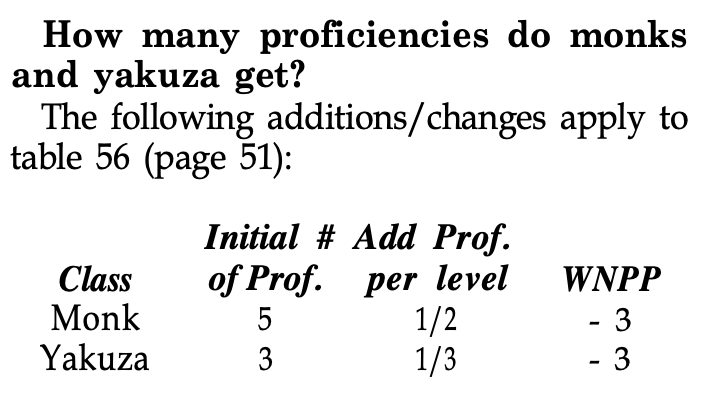
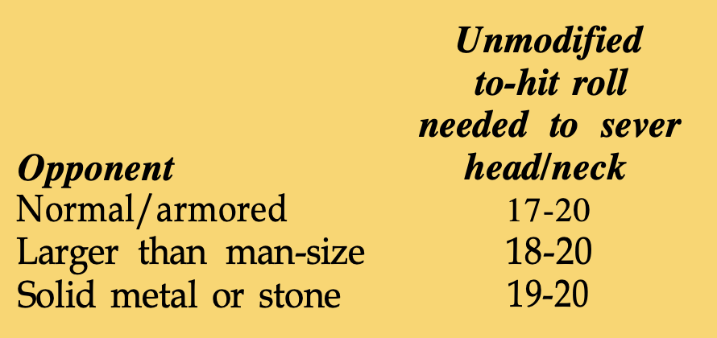

Q1: How long does a produce flame spell last? How many flames can the caster hurl?
Produce flame lasts one round per caster level. The caster can throw a maximum of one flame per level, but no more than one flame per round.
Page 10,
Q2: How do you determine how many square feet of faerie fire is required to cover a creature?
Just assume the caster can cover one man-size creature per level. Assume small creatures equal one-half a man, and large creatures equal one-and-a-half men.
Page 10,
Q3: Can halflings become clerics? Also, where are the advancement limits for demihuman characters?
Yes, halflings can become clerics. See the upcoming 2nd Edition Dungeon Master's Guide (page 15) for advancement limits for halfling clerics and other demihuman characters.
Page 10,
Q4: Can a thief character take the mountaineering proficiency and improve his climbing chance?
Yes, but the character's climbing chance cannot be made better than 95%.
Page 10,
Q5: Are you supposed to multiply strength bonuses to damage in a successful backstab, as described on page 40, or are you supposed to add strength bonuses after the multiplier, as explained on page 104?
The text on page 104 is correct.
Page 10,
Q6: What penalties does a bard suffer by using thief abilities when wearing normal chain mail?
Use the Elven Chain column in Table 29 but add another - 5% to the column's values.
Page 10,
Q7: Are multiclassed bards allowed? The text on page 45 mentions multi-classed bards, but the chart on page 44 does not.
Page 44 is correct; page 45 is wrong.
Page 10,
Q8: According to page 13, any warrior with a strength score of 16 or more gets a 10% bonus to experience. But later on, in the descriptions of the paladin and ranger, the rules say that members of these classes must have other high ability scores to get the bonus. Which is correct?
The text on page 13 is a misprint. Fighters get the 10% for a strength score of 16 or better; paladins and rangers must have additional high ability scores.
Page 10,
Q9: What happened to the fighter's ability to double specialize with a weapon?
It has been dropped.
Page 10,
Q10: Can a fighter specialize with more than one weapon?
No, but he can "save" additional slots as he earns them and specialize with a weapon later in his career if he doesn't fill those slots at the start.
Page 10,
Q11: Do demihuman fighters get to roll for extraordinary strength?
Yes; all warrior characters are entitled to exceptional strength rolls if they have strength scores of 18.
Page 10,
Q12: Does armor interfere with the new ranger's animal empathy ability? What is that ability's range? Why don't druids have this ability?
A ranger can wear any type of armor and still use animal empathy. The ranger must be close enough to the animal to attract the animals undivided attention (about 10 yards in a wilderness setting less, if the setting is something like a crowded marketplace that provides distractions). Individual DMs may give druids animal empathy if they wish. The rules don't give the druid this ability because a druids focus is on nature as a whole, not just on animals.
Page 10+12,
Q13: Isn't the new ranger too limited in spells? Can a ranger pick more than one type of creature for an enemy?
The ranger's two spheres give him plenty of spells. However, individual DMs might want to add a sphere or two; one campaign I am familiar with allows rangers to use healing spells. The DM has to decide what constitutes a valid enemy. Since the rules mention giants, it is probably acceptable to choose a class of creatures. Thus, a ranger from the FORGOTTEN REALMS™ setting might be allowed to choose the goblin races (see Cyclopedia of the Realms, page 46) as an enemy. A ranger can never choose two or more entirely different creatures as enemies.
Page 12,
Q14: Can rangers wear elven chain mail and still use the special abilities described on page 28?
Elven chain mail interferes with a ranger's special abilities; refer to Table 29 (page 39) for a list of penalties. Elven chain mail also negates the ranger's ability to use two weapons without penalty.
Page 12,
Q15: Does the ranger's + 4 attack bonus vs. a specific type of adversary apply to both attack and damage rolls?
The bonus applies only to attack rolls; see page 29.
Page 12,
Q16: Can paladins become dual-classed characters?
As clearly stated on page 44, there are no restrictions on the class combinations allowed to dual-classed characters, provided that alignment restrictions are respected. Most DMs, however, do not allow characters to combine subclasses (e.g., no bard/thieves, paladin/rangers, etc.).
Page 12,
Q17: With the large increase in the number of wizard spells, why wasn't there an increase in the minimum and maximum number of spells a wizard can learn? A wizard with an 18 intelligence can learn a maximum of 18 spells a level; that's less than half the number of first-level spells!
The AD&D® game is one of choices. The additional spells are intended to create a greater variety of mage characters, not more powerful mages.
Page 12,
Q18: Table 22 (page 31) shows the minimum ability scores required for specialist wizards. What is the minimum intelligence score required for a specialist wizard?
Specialist wizards must have an intelligence score of at least 9, just like a normal wizard.
Page 12,
Q19: What happened to the write spell?
It isn't needed anymore. The primary function of the write spell was to allow a mage to add a spell to his books after he had failed his chance to know roll for that spell. In the 2nd Edition game, a mage can attempt a new chance to know roll each time he gains a new level. (See "Spelling It Out," in DRAGON® issue #147, for more information.)
Page 12,
Q20: What is the material component for the spectral hand spell?
There is none. The "M" in the components' line is a typographical error.
Page 12,
Q21: Does casting the first version of a flame arrow spell break invisibility?
No, because this is not an attack.
Page 12,
Q22: Does the delayed blast fireball spell have a damage limit?
Yes. The limit is l0d6 + 10 hp damage.
Page 12,
Q23: Several spells are missing from Appendix 5.
Here are the schools for the omitted spells (at least the ones I know about): irritation deafness, fabricate and slow are alteration spells (fabricate is also an enchantment); Melf's minute meteors, evocation and alteration; locate object and know alignment, divination; geas, enchantment/charm.
Page 12,
Q24: In Table 22 (page 31), the races allowed entry for diviners is any. Does this mean that a character of any PC race can be a diviner?
No. Only races eligible for the mage class (humans, elves, and half elves) can become diviners.
Page 12,
Q25: What happened to cantrips?
Cantrips are still in the game. Just use the first-level cantrip spell. If you need help figuring out what kind of cantrips to cast, use your copy of Unearthed Arcana as a guide. Actually, things are better now for cantrip-using mages because they no longer need to waste spell book space on cantrips, and they are no longer limited to the few cantrips in their books.
Page 12,
Q26: Since mages start the game with the ability to read spell books and to write in them, do they also have the ability to read and write their native languages?
No. Magic is written in a special language.
Page 12,
Q27: The new rules mention the possibility of fireballs detonating early and lightning bolts rebounding because of hitting an obstruction. My group and I thought these spells always hit, just as a magic missile spell does. If these spell do not always hit, how does the mage hit his opponent?
The spells do always hit, after a fashion. In the case of a fireball, the missile bursts at the designated range unless it strikes an object before it gets there. Since the missile flies in a straight line between the caster and the target, it can be blocked by invisible barriers (such as walls of force) or by a bend in a passage obscured by an illusion or mirror.
A lightning bolt is similar to a fireball in that the spell begins at a designated height and range, extending directly away from the caster. A lightning bolt is always either 40' or 80' long, and the caster must decide which when he casts the spell. If caster miscalculates and casts this spell into an area too small to contain it, the lightning bolt grows to its full length (as measured from the point where it strikes a barrier), heading back at the caster unless it smashes through the barrier (see page 151). Some readers have misread the example on page 151; lightning bolts do not bend or fold over when hitting a barrier. The 80' bolt in the example starts 40' away from the caster, travels 10', and strikes a barrier; the bolt must maintain its full length, however, so the opposite end of the bolt (starting from the point of origin) instantly grows out in the direction toward the spell-caster, extending 70' from its point of origin. Thus, the bolt's final length is SO'. A victim caught between the point of origin and the wall behind him is not struck twice by the bolt. The use of the word rebound in the spell's description seems to be the confusing element.
Page 12,
Q28: The text under the new identify spell says a fully charged ring of three wishes radiates only faint magic. Is this an error?
There is no error in the spell's description, but you have made an erroneous statement. The identify spell does not detect magic or its strength; it reveals an item's functions and charges. A ring of three wishes has only three charges, so it is faintly charged. Smart wizards use a detect magic spell, which can determine magical strength and type, before casting identify.
Page 12,
Q1: Does a character need to spend two proficiencies in bastard sword use—one for one-handed use and one for two-handed use?
This is up to the DM, but I suggest that two slots be required. One campaign I am familiar with allows characters with long sword or two-handed sword proficiency to use the bastard sword in its corresponding mode (in other words, a character who can use a long sword can use a bastard sword one-handed without penalty).
Page 10,
Q2: How can a sling bullet do the same damage as a heavy crossbow and more damage than a light or hand crossbow? Why would anyone bother with a crossbow when a sling has a better rate of fire, the same or better damage, a lower cost, and a lower weight?
Slings are very effective weapons and are often underrated. The bullets are heavy, have excellent aerodynamic qualities, and are hurled with a great deal of force. Why doesn't everybody use a sling? Well, try to swing a sling underwater, while hiding in dense undergrowth, or from around a corner. Also, bow and crossbow specialists get a point-blank range category and the ability to fire before the initiative roll in some cases.
Page 10,
Q3: The new rules (on page 106) say a character must make a system shock roll to be raised from the dead. If so, what are resurrection survival scores used for?
This is a typographical error. System shock rolls are made when characters are exposed to magical aging, polymorphing, or petrification. Resurrection survival rolls are used when bringing slain characters to life again.
Page 10,
Q4: How much does a wooden staff cost?
Any character can cut and trim his own staff. Prepared staves cost 1 sp each.
Page 10,
Q5: Can characters use missile weapons when fighting toe-to-toe with an opponent?
Characters cannot aim and fire bows, use slings, or hurl hand-held weapons while in melee. Loaded and cocked crossbows can be fired in melee but cannot be reloaded. Since light and heavy crossbows are too large to be very handy, the DM might rule that they can be fired only when the user has initiative.
Page 10,
Q6: How much damage does an arrow fired from a short bow do? Can flight or sheaf arrows be fired from short bows?
Short bow arrows do 1-6 hp damage to targets of all sizes. No matter what sort of arrow is fired from a short bow, it does damage as a flight arrow (1d6/1d6).
Page 10,
Q7: The charging rules say that a spear set vs. a charge does double damage, but this in not mentioned in the equipment list.
Any weapon that can be set vs. a charge does double damage when so employed.
Page 10,
Q8: Can a character attack while with- drawing?
This is up to the DM, but I suggest not. If you do allow fighting withdrawals, the character making the withdrawal should get an attack only if there is an opponent following him. Even then, the character should attack last and with a -2 penalty to his attack roll.
Page 10,
Q9: The rules mention nets, lassos, and mauls as possible weapons for clerics (page 34), but these weapons do not appear in the weapons charts (pages 68-69).
A maul is a warhammer; see the Weapons Table on pages 68-69. Lassos and nets are not part of the 2nd Edition game and were mentioned in error. However, a typical war net is made from woven hemp cords and has small lead weights sewn into the edges. It is 5' across, weighs 6 lbs., and costs 12 sp. It takes two hands and 6' of clear space to throw a net, and the effective range is 30'. Any target hit by the net must save vs. breath weapon or become entangled. Entangled victims cannot fight or move, and defend at -2. Entangled victims wriggle free if they make a successful wrestling attack vs. AC 2; they can make one attempt to get free each round. When used as a melee weapon, treat a net as a scourge. A lasso is simply a rope with an adjustable loop. A successful hit with a lasso puts the loop around part of the target creature's body, but this does not necessarily immobilize the creature; the DM has to decide where the loop is (around the neck, a limb, the upper body, etc.) and assess the appropriate penalty. Since the lasso's wielder can pull the loop tight, the only way to escape, short of killing the wielder or getting the rope away from him, is to cut or break the rope.
Page 10+12,
Q10: A broad sword is mentioned as a thief's weapon (page 38), but the broad sword is not described.
Use these statistics for that weapon: cost 10 gp; weight 4 lbs.; size M; type S; speed factor 5; damage 2d4 (S-M)/1d6 + 1 (L).
Page 12,
Q11: What is the rate of fire for a high-level fighter using an arquebus?
The rate of fire for any missile weapon stays the same for all users regardless of level, except for specialized users (see Table 35, page 52).
Page 12,
Q12: How can a character become proficient with an arquebus? Wouldn't this require a large or even unlimited supply of powder and shot? If the character chooses to specialize, what would the rate of fire be?
This is up to the DM, but your suggestion regarding gunpowder supplies sounds reasonable because the character would have to practice with the weapon. Arquebus specialists rates of fire are: 1st-6th level, 1/3; 7th-12th level, 1⁄2; 13th level and up, 1/1.
Page 12,
Q13: Can a fighter attack with a long sword in each hand?
No; two-weapon attacks are limited to one medium and one small weapon, or to two small weapons.
Page 12,
Q14: Can a fighter who is specialized with two weapons use them both at the same time and get the damage bonus and multiple attacks for each hand? Does a fighter get a strength bonus for each hand?
Fighters can specialize with only one weapon. Any character attacking with two weapons gets one—and only one—extra attack per round; the character gets the full number of attacks for the primary weapon and one attack from the secondary weapon. The DM can allow strength bonuses for each hand, but I do not recommend it. Limit strength bonuses to one weapon or the other, or allow the character to split the bonus between weapons.
Page 12,
Q15: How large are light crossbow quarrels and short swords?
Light quarrels and short swords are small weapons. To preserve game balance, you might want to disallow the use of short swords as secondary weapons in two-handed attacks.
Page 12,
Q16: What happened to weapons' space requirements?
Space required for melee weapons can be inferred from their sizes and types. Bludgeoning or slashing weapons generally require as much clear space for use as their lengths. Piercing weapons and most missile weapons generally require 1' of clear space.
Page 12,
Q17: Why can't blunt melee weapons be used in nonlethal combat? It seems to me that a weapon like a mace would be better for knocking out a creature than a sword would be.
As explained on page 98, a mace has no "flat" side that can be used at less than full effect. Still, since using a weapon in nonlethal combat carries a -4 attack roll penalty, you could assume that the mace wielder could "pull the blow" and inflict reduced, temporary damage.
Page 12,
Q18: On page 101, the section on saving-throw priority says Table 60 is set up in order of priority. But the example given contradicts this.
Table 60 is correct; the example is wrong.
Page 12,
Q19: What is the conversion rate be- tween the 1st Edition monetary system and the 2nd Edition monetary system?
The new system is close enough to the old one so that you need not convert treasures or prices. (Prices in the 2nd Edition game tend to be higher, but this reflects adjustments in the relative values of some items, not a decline in the value of currency.) The only real difference is that silver and copper pieces have doubled in value with respect to gold (compare page 35 of the 1st Edition Players Handbook with page 66 of the 2nd Edition Player's Handbook). If you are a stickler, cut the number of copper and silver coins in any 1st Edition module's horde by half to reflect the new values of those coins.
Page 12,
Q20: When setting prices for items not listed in the 2nd Edition game, what is the conversion rate between U.S. dollars and gold pieces?
An AD&D game gold piece is worth approximately $20 when comparing buying power. Note that if a group of AD&D game adventurers found themselves in a modern setting, their gold pieces would be next to worthless as legal tender, but very valuable for their gold content.
Page 12,
Q21: Can the various subclasses be used in multiclassed combinations (e.g., a half-elf ranger/thief, or an elf mage/bard)?
No; only the classes listed on page 44 can be used in multiclassed combinations.
Page 12,
Q22: Do multiclassed characters still divide their experience points among classes?
Yes; see page 44.
Page 12,
Q23: When a character temporarily loses one point of constitution from long-distance swimming, does he also lose bonus hit points gained from that point of constitution?
Yes; any constitution loss strips bonus hit points gained from the lost points. Temporary constitution losses thus produce temporary hit-point losses.
Page 12,
Q24: What happened to weapons' space requirements?
Space required for melee weapons can be inferred from their sizes and types. Bludgeoning or slashing weapons generally require as much clear space for use as their lengths. Piercing weapons and most missile weapons generally require 1' of clear space.
Page 12,
Q25: Are alignment languages used?
Alignment languages are not part of the 2nd Edition game.
Page 12,
Q26: Do drow and deep gnome PCs still have the abilities attributed to them in Unearthed Arcana?
All subraces in the 2nd Edition game are treated just like members of the appropriate main race. However, individual DMs are free to retain Unearthed Arcana attributes for drow and deep gnomes.
Page 12,
Q27: What are the size classes of each of the PC races?
Halflings, dwarves, and gnomes are small creatures. Humans, half-elves, and elves are medium (man-size) creatures.
Page 12,
Q28: What happened to weapons' space requirements?
Space required for melee weapons can be inferred from their sizes and types. Bludgeoning or slashing weapons generally require as much clear space for use as their lengths. Piercing weapons and most missile weapons generally require 1' of clear space.
Page 12,
Q29: What good is the healing proficiency if a character can regain the hit points just by resting for a day?
First, the healing proficiency restores lost hit points to characters who do not or cannot spend an entire day resting. Second, the two forms of healing are cumulative, so that a character who rests an entire day and receives treatment from a character with healing skill regains 1d3 + 3 hp/day. Note that a character who tends wounded characters is not considered to be resting.
Page 12,
Q30: According to Table 65 (page 122), unskilled characters have a base climbing chance of 40%. The same table notes that a character who spends one slot for the mountaineering proficiency also has a 40% climbing chance. Is this an error, or do characters have to spend two slots before they are better climbers than unskilled characters?
Yes, there is an error. The base climbing chance improves 10% for each slot spent on mountaineering; thus, a character with one proficiency slot in this skill has a 50% base climbing chance.
Page 13,
Q31: According to Table 67 (page 123), it is impossible to climb a "dry" ice wall, but a character can climb a slippery ice wall at one-fourth the normal climbing rate. Is this an error?
This is not really an error. All ice walls qualify as slippery surfaces—there are no dry or slightly slippery ice walls.
Page 13,
Q32: Chapter 7 says a character can try to disbelieve an illusion just by spending a round doing so. Furthermore, if the player can give a good reason why the character is disbelieving, the DM can give a bonus to the saving throw. But Appendix 2 says a reason must be given for any disbelief attempt to succeed. Which is correct?
Chapter 7 is correct. Appendix 2 is intended to remind players that disbelief is never automatic; disbelief must be active. In other words, do not check for disbelief unless a player says his character is disbelieving; if the character has a very good reason to disbelieve and if the player can explain this reason to the DM; a bonus to the disbelief roll might be awarded. The text in Appendix 2 is also intended to convey to players that they cannot avoid illusions by having their characters disbelieve everything that comes along. The DM need not quiz the player about the exact reasons for disbelief, but the DM should be convinced that the character has some legitimate reason for disbelieving an illusion before he allows a saving throw.
Page 13,
Q33: Do full and field plate armor still absorb damage?
No, they don't.
Page 13,
Q34: What good is a helmet? Does any suit of armor come with one?
Helmets protect the head and are important to any character with a humanoid body. Every suit of armor is assumed to include a helmet whose construction is similar to the armor. If an armored character wears no helmet, he loses one armor class (for example, AC 4 becomes AC 5).
Page 13,
Q35: I was shocked to see that TSR, Inc. condones the killing of baby drag- ons (as graphically illustrated by the color plate on page 7).
With the new information on dragons given in the first Monstrous Compendium (TSR product #2102), available in July, PCs are going to have to catch dragons while they are small if they are going to have any chance to kill them at all (see also "The New Ecology of the Dragons," in DRAGON issue #146, for more information).
Page 13,
Q36: If the proficiency system is used, do demihuman characters have to spend a slot to learn the common tongue since they begin with their native tongue only?
Strictly speaking, demihumans must spend a slot to know Common. However, DMs should feel free to give Common to demihuman characters for "free." It can be fun to role-play characters who cannot speak with each other, but this kind of play can bog down the game and usually gets boring after a few sessions.
Page 13,
Q37: Can the running nonweapon proficiency be used with the jogging/running rule? Are the two cumulative?
A character using the running proficiency cannot use the jogging rule (he is already moving as quickly as the jogging rule allows). He can, however, use the running rule to increase his speed. If the character fails one of the ability checks for continued running, he must follow the rules on page 120, and has finished using his running proficiency for the day.
Page 13,
Q38: According to Table 65 (page 122), unskilled characters have a base climbing chance of 40%. The same table notes that a character who spends one slot for the mountaineering proficiency also has a 40% climbing chance. Is this an error, or do characters have to spend two slots before they are better climbers than unskilled characters?
Yes, there is an error. The base climbing chance improves 10% for each slot spent on mountaineering; thus, a character with one proficiency slot in this skill has a 50% base climbing chance.
Page 13,
Q39: Page 45 says a dual-classed character who loses a level to an energy drainer will lose his highest level; if drained again, he loses the level that is hardest to replace. However, the example shows a character losing one level in each class to a wight. What is the correct procedure?
A dual-classed (or multiclassed) character who loses a single level to an energy drain always loses his highest level, no matter how many times he is drained. If his levels are equal, he loses the level that takes the most experience to regain. The example on page 45 is correct only if the character loses two levels at once. In this case, the dual-classed character loses one level from each class, just as in the 1st Edition AD&D game.
Page 13,
Q40: I thought falling damage was cumulative per 10', reaching 20d6 at 60'. What happened?
The controversy over falling damage has been settled. Falling damage is 1d6 for each 10' (or fraction of 10') fallen. The reasons are thoroughly explained on page 104. Individual DMs are free to plague their players with any variant falling damage systems they can devise.
Page 13,
Q41: Does a character take falling damage if he deliberately jumps?
In most cases, yes. If the DM wants to simulate short jumps, I suggest calling for a dexterity check. If the check succeeds, subtract 10' from the jump's height—that is, a 10' jump inflicts no damage, a 20' jump inflicts 1d6, and so on. Failure results in a normal fall.
Page 13,
Q42: Are the nonweapon proficiency modifiers shown in Table 37 (page 54) applied to the die roll or to the ability score?
The adjustments are made to the character's ability score.
Page 13,
Q1: Why haven't you answered my 27 letters, each with 57 questions on my favorite game system? You said you would reply if I sent an SASE with each letter. Why don't you give a seminar at the GEN CON® game fair? If I come to Lake Geneva, can I meet you and ask you questions?
Although the "Sage Advice" in DRAGON issue #121 said the sage would make personal replies, I receive so many letters that I cannot answer every one. (However, if you don't enclose an SASE, I cannot reply at all.) Usually I reply only to letters that have questions I can use in the column, so that all the readers get the benefit of my time. Needless to say, I don't give extended private interviews in Lake Geneva or anywhere else.
If you want to increase your chances of getting a personal reply, do the following:
1. Look through your books for your answers, and be sure to consult the indexes (if the books have them). Often, with a little extra effort, you'll find rules that have eluded you.
2. Keep your letter short. Decide what you really need to know, and stick to the most important questions. As I've stressed before, role-playing games involve choices and decisions; don't be afraid to make some on your own.
3. Include the title of the book and the page number that contains the rule you are asking about; this saves me a lot of page flipping.
My work with the RPGA™ Network keeps me busy at almost every game convention I attend, and seminars are not the best place to answer rules questions. I'm not an encyclopedia of game knowledge. I rely on a big library and a large network of personal contacts to find answers, and few people would be entertained by watching me flip through my books and consult my files while I struggle with a tricky question. Still, I do answer some questions at conventions; just keep them short, and don't interrupt me while I'm running a game. Also, some conventions I attend collect written questions for me so that I can use them in the column or work on them during the show and discuss the results with anyone who is interested.
Skip Williams
Page 8,
Q2: Why are you still running questions for the AD&D 1st Edition game now that the AD&D 2nd Edition game is on the market?
DRAGON Magazine will continue to use material specifically for the AD&D 1st Edition game simply because so many people use that edition. The 2nd Edition has only been out for six months, but the 1st Edition game has been available for over a decade. (Remember, too, that material for one edition can usually be used with the other with ease.) As time goes on, we expect that more players will switch to the 2nd Edition game, and our coverage of that system will increase. We want to offer the most useful material to the largest number of gamers.
Roger E. Moore
Page 8,
Q3: What is the proper way to handle a fight with a hydra? Does the creature's effective hit dice drop as it loses heads? Will damage to the creature's body kill it? How do area-effect spells such as fireball effect the heads? How does one determine when a lernaean hydra's regeneration ability is stopped?
Hydras do pose a few problems, especially when magic is involved. I suggest the following rules for handling combat with a hydra.
A hydra's effective hit dice do not drop as the creature loses heads. With respect to melee, each of a hydra's heads is treated as a separate creature. Each head dies when it reaches zero hit points, and excess damage does not carry over to another head. When all heads are reduced to zero hit points, the creature dies immediately. Hits to a hydra's body will kill it; the body has as many hit points as the total hit points of its starting heads. When the body is reduced to zero hit points, however, the creature continues to fight as long as it has at least one living head. It will then fight for an additional 2-8 rounds or until the body is reduced to -20 hp.
A lernaean hydra's regeneration ability makes it a tougher nut to crack. The individual heads can be slain in the normal manner; however, a fire source must be applied to each slain head or it will regenerate. Burning hands is the easiest way to scorch the stumps or sundered heads. A torch, flask of oil,. or flame tongue sword will stop a single head's regeneration if applied in time. Any successful hit on the slain head will stop regeneration. A lernaean hydra stays alive as long as it has one living or regenerating head (hits to the creature's body not withstanding).
When any hydra is affected by an area spell such as fireball or lightning bolt, the heads are treated as a single entities, with the damage distributed as evenly as possible among the heads. Although the heads are separate melee targets, they are still part of the same creature. The creature's body suffers as much damage as the heads took in total (i.e., the hydra gets one saving throw, but the heads and the body each take damage).
Spells that can kill a creature outright such as death spell, power word kill, or disintegrate kill the creature only if it fails its saving throw (if applicable). When determining a hydra's resistance to such spells, its effective hit dice are equal to its starting number of heads (or peak number, in the case of a lernaean hydra), and its effective hit points are equal to the total hit points of all the heads (damage to the body notwithstanding).
A spell that affects one creature or a limited area (such as magic missile or burning hands) must be directed either at the body or at one or more heads of the hydra, according to the limitations of the spell. Spells such as charm monster, hold monster; or slow affect the entire creature, as the beast effectively has only one brain—perhaps at the base of the necks inside the body.
Page 8-9,
Q4: What happens if a magic-user uses a sword when in desperate need?
If a character's need is truly great, the DM can allow any class of character to use a weapon prohibited to his class. The normal nonproficiency penalty applies (perhaps with an additional - 1 to hit). If a player falls into the habit of declaring his characters in desperate need too often, however, the DM should either disallow the use of the prohibited weapon or give the character no experience award for completing the adventure.
Page 9,
Q5: What are the effects of blindness and deafness on spell-casting?
Blinded creatures are unable to cast any spell that requires a target, but spells that can be cast on an area (such as fireball) or delivered by touch (such as cure light wounds) may still be used. Deafness can cause spells with verbal components to be miscast and fail. The failure chance is up to you, but it shouldn't exceed 20% (less for spells with short casting times). The cleric spell holy word has a deafness effect that causes spells to fail 50% of the time; this is due mostly to the extreme power of the holy word, not merely the deafness.
Page 9,
Q6: What is the significance of weapon speed factors?
Weapon speed factors allow for comparison among weapons. The lower the speed factor, the quicker the weapon. Their most common use (and the only use mentioned in the rules) is for breaking ties on initiative. When a tie occurs, compare weapon speed factors; the lowest factor goes first. However, on the first round of a melee, when the opponents are closing, the longer weapons have the advantage. The advantage is also with mounted opponents attacking or defending against unmounted opponents and with characters who are defending or attacking from above. Spellcasting time is equivalent to the weapon speed factor. That is, a weapon with a speed factor of 3 is as slow as a three- segment spell for purposes of tie breaking.
Page 9,
Q7: How do you use the weapon to-hit adjustment tables in the Players Handbook (page 38) and Unearthed Arcana (page 27)? I don't understand what they mean.
The tables list the bonus or penalty given to a weapon against the basic armor types. For example, the line for Axe, Hand reads: -5, -4, -3, etc., for AC 0, AC 1, AC 2, etc., respectively. Full plate armor and shield gives AC 0, so a hand axe has a -5 to hit vs. full plate armor and shield. If the target were wearing full plate armor + 1 and using no shield, the adjustment is still AC 0. However, full plate armor alone is AC 1, so you use the AC 1 column regardless of magical bonuses, and the hand axe has a -4 to hit. The same holds true for dexterity bonuses. These tables are for attacking humans, demi-humans, and humanoids—never for attacking monsters. Use of the tables is strictly optional; they were included in the game mainly to satisfy the real history buffs who know that certain weapons were much more effective than others on the medieval battlefield.
Page 9,
Q8: What do the following weapons look like: bardiche, spetum, voulge, guisarme, halberd, and scimitar?
Some of the less-known weapons in the AD&D game are pictured and described in Unearthed Arcana, pages 123-128. The weapons depicted on these pages include everything on your list except the scimitar. A scimitar is simply a curved broad sword used by Arabs and Saracens. If you've seen any movies depicting the Middle East during the crusades, you've seen scimitars.
Page 9,
Q9: What is a morning star?
A morning star looks like a long, thin club with spikes or flanges at the business end. The morning star in the AD&D game is similar to a mace but is longer and heavier. Some books on weapons identify a ball and chain as a morning star, but this combination is considered to be a flail in the AD&D game.
Page 9,
Q10: Why did Unearthed Arcana take shields away from assassins? It seems a high price to pay for the option of having a good alignment.
Unearthed Arcana is in error. Assassins may use shields but not during a melee round in which the character is engaged in the act of assassination. The alignment expansion was not an error.
Page 9,
Q11: Can a character with a girdle of giant strength throw a halberd? When one of my players tried to do this I allowed it, but with a big to-hit penalty.
You were correct. Pole arms are not intended to be thrown, no matter what the thrower's strength. Anything, however, can be thrown with some chance of success. For throwing a pole arm, we suggest a to-hit penalty of -4 at short range (10' or less), -6 at medium range (11-20'), and -9 at long range (21-30'). We also suggest that you use these ranges outdoors where other missiles have ranges measured in yards. A pole arm is far too long for a human-sized creature to throw like a hand axe (so that the weapon spins or tumbles), no matter how much strength is available. Spear-type throws are possible, but hits can inflict damage only if the pole arm that is thrown has a spear point. Use spear damage (1-6) in this case, not pole-arm damage.
Page 9,
Q12: What are the effects of total dark- ness on combat? When last faced with this problem, I simply ruled that everything within the darkness was invisible, and I applied the -4 to-hit penalty.
You handled the situation correctly. More information on the effects of darkness is given on page 32 of the Dungeoneer's Survival Guide.
Page 9,
Q13: What does the space requirement listed for each weapon mean?
The space requirement is exactly that: the minimum space a character must have in order to use a weapon. For example, a fighter must be standing in a space at least 4' wide to use a battle axe. Space requirements are cumulative; therefore, two fighters using battle axes side-by-side would require 8' of space.
Page 9,
Q14: Can creatures with at-will abilities use such abilities while attacking? Can they use several abilities in the same round, say one per segment?
Creatures that have at-will abilities may use one such ability, once per round, in addition to normal movement or attacks.
Page 9,
Q15: Can magic-users move during a round when they cast spells?
A magic-user must remain stationary only as long as the casting time of the spell. After casting a spell, the mage can move during the remainder of the round. For example, a fireball takes three segments; therefore, the mage casting it could have seven segments worth of movement after casting the spell. See page 102 of the Players Handbook for per-segment movement rates.
Page 9-10,
Q16: Is it possible for a character to leave a melee without exposing his back?
The DM might allow a character to back out of a melee at half speed so that the opponent's free attack would be frontal. Some campaigns allow a friendly character to cover for a retreating character so that the extra attack is resolved normally against the the character who is covering.
Page 10,
Q17: Can fighters with multiple attacks attack more than one opponent per round?
Yes; so can monsters and the members of other character classes that get multiple attacks.
Page 10,
Q18: How long does paralyzation last? Is it permanent until cured? What cures paralyzation? What is paralyzation, really?
In medical terms, paralyzation is the loss of sensation in part of the body as the victim's brain, for one reason or another, no longer controls the body. The uncontrolled muscles relax, and the victim goes limp. Autonomic muscles, such as the heart and lungs, are unaffected. Some kinds of paralysis in the AD&D game (paralysis caused by ghouls and ghasts, for example) cause the victim to become rigid and immobile. In either case, paralysis affects only the body, not the mind. The victim can still think and use psionics or any form of movement that does not require muscular effort. For example, if a character becomes paralyzed while using a fly spell, he can still fly until the spell runs out.
Paralyzation is not permanent. It can last anywhere from several rounds or turns to as much as a day. It can be removed with a remove paralysis spell (which removes paralysis of all types) or by a cure disease, neutralize poison, or dispel magic spell, depending on what caused the paralysis. Paralysis caused by undead creatures is disease- or fear-based; paralysis caused by living creatures is poison-based; paralysis caused by a glyph of warding or the illusionist spell paralyzation is magic-based. The AD&D 2nd Edition Monstrous Compendium, Volume 1, lists the duration for ghoul paralysis as 3-8 rounds and ghast paralysis as 5-10 rounds. Paralysis caused by more powerful creatures lasts longer; lich paralysis, for example, lasts until dispelled.
Page 10,
Q19: Can a character with a bastard-sword proficiency also use long swords and two-handed swords, or does the character instead, require a proficiency in both long and two-handed swords?
Each weapon on the weapons lists requires a separate proficiency Although a bastard sword can be used one-handed with the same effect as a long sword, its larger size requires different handling. Likewise, the bastard sword requires different handling than the longer and heavier two-handed sword. However, if a character is proficient in bastard sword, he may use that sword either way.
Page 10,
Q20: What is a bastard sword's space requirement and speed factor when used one-handed?
The same as when it is used two-handed.
Page 10,
Q21: If a fighter is specialized (or double specialized) in a bastard sword, does he get the specialization bonuses when using the sword two-handed and one-handed?
A bastard sword is primarily a two-handed weapon. For purposes of game balance, it is best to limit specialization bonuses to two-handed use (or let the player choose).
Page 10,
Q22: When a character gains proficiency with a multipurpose weapon (such as a kusari-gama in Oriental Adventures), does the character automatically gain proficiency with the weapons that correspond with each function (in this case, with chain and kama)?
The situation is analogous to that of the bastard sword described previously. Knowledge of the combination weapon does not necessarily allow use of its component weapons. The techniques required to use each of the weapons you mentioned are different. The governing principle in both of these cases is the no-free-lunch rule: You can't get two or more proficiencies for the price of one simply by selecting a multipurpose weapon.
Page 10+36,
Q23: When do charging characters attack? What are the effects of a charge?
Charging monsters or characters may attack normally at the end of their charge; exactly when depends on the reach of the weapons being used (longer weapons attack first). The charge movement, initiative, and affects chance to hit. See the DMG, page 66, for more details on charging.
Page 36,
Q24: How do high dexterity scores or a short sword of quickness affect initiative?
High dexterity never affects initiative; it affects only surprise. A short sword of quickness allows the wielder to attack first. This is not the same has having the initiative; a thief-acrobat (for example) cannot automatically evade each round simply because he has a short sword of quickness. He must win the die roll before he can evade.
Page 36,
Q25: Can missile weapons, other than hurled melee weapons, he used in melee?
No, missiles cannot be fired or hurled when the firing character is in melee. Furthermore, bows and arrows are not melee weapons and cannot normally be used in hand-to-hand combat. A bow or crossbow could, however, be used for pummeling (see Unearthed Arcana, page 107).
Page 36,
Q26: Can a character fire a missile into a melee without hitting friendly characters? If not, what is the chance of hitting an ally?
This depends on the situation. When firing into a melee, use the following procedure:
The character firing the missile declares which creature he is targeting. (Any of the character's allies who are fighting with the target creatures are potential targets for the missile.) Randomly determine which target will actually be in the path of the missile. If the figures in the melee are about the same size (e.g., human vs. hu- man, elf vs. dwarf), there is an equal chance that either the enemy or an ally could be the missile's actual target. If the die roll indicates that an ally will be the actual target and there are multiple allies fighting the intended target, randomly determine which ally is the actual target.
Roll the to-hit number. If the appropriate number for the target's armor class is rolled, then the target is hit whether or not the character firing the missile wanted to hit that target. If the creatures in the melee are of different sizes, the larger creatures are more likely to be hit. I sug- gest a two-thirds chance (1-4 on 1d61 to hit the larger target when the height difference is 2-3' (ignore height differences of less than 2'). If the height difference is more than 3', allow the missile to hit the larger target automatically if the firer wishes; otherwise, the chance to hit the larger target is 5 in 6.
Many campaigns exempt the magic missiles spell from this rule. Magic missiles are assumed to unerringly strike their targets.
Page 36,
Q27: Is it possible to use an object for nonlethal combat? How much dam- age would a chair or bar stool do?
Yes, you can use odd objects for nonlethal combat. The amount of damage such objects can do depends on their hardness and mass. See Unearthed Arcana, page 107.
Page 36,
Q28: How far can objects be tossed or thrown?
The maximum range for any tossed object is 5" (a stone) or 3" (a flask of oil or a vial of holy water), as long as the object is reasonably compact. Large, bulky objects have a maximum range of 2" or less, depending on the situation.
Page 36,
Q29: How do you handle gaze attacks?
A creature with a gaze weapon may use it on one opponent per round in addition to any physical attacks. If the creature is unintelligent, this will be a random opponent. Intelligent creatures may pick their victims. Any opponent who can see the creature can be subject to the attack. The opponent who is subjected to the gaze attack must save vs. petrification. Some campaigns allow opponents to avert their eyes and become immune to the gaze attack, but such opponents attack and defend at a -4 penalty, and the decision to avert the eyes must be made prior to both the initiative roll and anyone knowing where the gaze will be directed. Some DMs may rule that if an entire party is surprised, all must save against the gaze during the first surprise segment of the encounter (several party members could accidentally meet the creature's gaze during the confusion of the surprise segment).
Page 36,
Q30: I seem to recall some rule about a penalty when a character makes more than one attack in a round. Is there such a rule?
We can refer to page 70 of the DMG for this answer. The reference states that a character may use a second weapon instead of a shield, provided that the second weapon is a dagger or hand axe. Otherwise, there is no penalty for multiple attacks.
Page 36+38,
Q31: Is there any way to prevent a vorpal weapon from severing the neck if the attack roll is high enough?
No. However, the DM might choose to introduce some kind of protective magic that would do this. Note the limitations given on page 166 of the DMG. The DM might choose to introduce some additional limitations; for example, it would be impossible for a human to sever a cloud giant's neck unless the giant was bent over or the human was flying or levitating.
Page 38,
Q32: Will unholy water harm a paladin?
Yes. It is created by an evil ritual and is harmful to paladins and good creatures of extraplanar origin such as devas and solars.
Page 38,
Q33: Can a cleric turn undead, then attack, run away, or cast a spell in the same round? Or does he stand there for a whole round, give up shield and dexterity adjustments to armor class, and hope that the turning works?
Turning undead is a separate activity. A cleric who turns undead may not fire missiles, melee, or cast spells in the same round as he turns undead, although he defends normally and may be able to move (DM's option).
Page 38,
Q34: The monk ability quivering palm does not work on creatures that are struck only by magical weapons. Looking at the DMG, I see that creatures that are themselves immune to normal weapons can hit other creatures that are immune to nor- mal weapons. Does the reverse hold true? That is to say, are those creatures that can hit creatures immune to normal weapons immune to normal weapons themselves? Specifically, are high-level barbarians immune to normal weapons and quivering palm?
The barbarian's ability to hit those creatures that are normally hit only by magic weapons does not protect him from nonmagical weapons or a monks quivering palm.
Page 38,
Q35: Can a torch be used as a weapon? How far can a torch be thrown? There are some instances when it is desirable to use a torch as a second- ary weapon; is this allowed?
Torches can be used as primary weapons; treat them as clubs for all purposes—even when throwing and inflicting damage, assuming that the torch is lit and the target is not immune to fire. A torch may be used as a secondary weapon if the DM thinks the situation warrants it. Apply the "Attacks With Two Weapons" rule on page 70 of the DMG. If players attempt to abuse the privilege, the DM might have a character set fire to himself or his equipment. Have the torch either save vs. normal blow as thin wood, or break. The fire has a 10% chance of going out per blow.
Page 38,
Q36: How long does it take to draw a weapon?
Any weapon can be drawn in one segment (this effectively adds one segment to the weapon's speed factor). Common sense, however, dictates that a character who draws a weapon during a melee will lose initiative to a character who has already drawn his weapon, unless the character with the drawn weapon must use the segment that is required for the draw in order to close to melee range. Note that sheathing a weapon takes a bit longer; changing weapons carefully takes a full round (see Oriental Adventures, page 54).
Page 38,
Q37: How come a low-level character gets only one attack per round? A one-minute melee round certainly allows time for several attacks, especially if the character uses a light weapon such as a dagger.
A single melee attack in the AD&D game assumes the exchange of several blows. The player's single attack roll represents the result of a series of attacks by the character, not just a Single blow. See the DMG, page 61, for more details. High-level characters who are allowed multiple attacks do not actually strike more blows; their greater experience merely allows them to strike a larger percentage of telling blows.
Page 38-39,
Q38: Unearthed Arcana (page 78) says that a sap will stun an opponent if it hits him in the head when the head is uncovered. Since there are no hit location tables in the AD&D game, how do you determine if the sap hit the opponent's head?
The DMG has a rule that says an intelligent creature can aim a blow at an opponent's head half the time (1-3 on 1d6). While this rule (see page 46) encourages characters to wear helmets, I think it's a bit excessive. Try any of the following for adjudicating attacks with a sap:
Any attack roll four or more over the minimum score needed to hit the target strikes the head. Strength bonuses don't count when determining the minimum score to hit, but bonuses for rear attacks (including a thief's back-attack bonus) and attacks on prone opponents do count.
Treat the sap as a pummeling implement, and use the rules on page 107 of Unearthed Arcana. The sap does no damage unless a stun is scored. It has the chance of a large and hard object to stun, and does normal sap damage (1-2) when a stun is scored. A sap is a weapon and negates the initiative penalty for pummeling attacks. Roll a 1d6 before each attack; a one indicates that the attack will strike the head if the sap hits.
Page 39,
Q39: The DMG gives a procedure on page 70 for attacking magically sleeping opponents, but what about normally sleeping opponents?
The to-hit bonus vs. normally sleeping opponents is +4.
Page 38,
Q1: What do the birth ranks generated on table 38 (page 31) really mean?
As explained on page 31, the exact circumstances of a character's birth are up to the DM. The higher the initial die roll, the better off the character's family is. A first rank character, for example, probably comes from a well-to-do family with clear connections to the imperial family, or perhaps the character belongs to the imperial family (he might be a distant cousin). Upper-class families are skilled artisans, scribes, or wealthy merchants.
Page 8,
Q2: I don't understand the birthright rules on page 34. How do you use birth rank in order to modify the chances for a birthright? If you subtract birth rank from the number of rolls on table 40, then characters with low ranks never receive birth- rights, right?. Also, not all the results on the birth rank table (table 38, page 31) have numerical values.
The term "birth rank" is used incorrectly on page 34. The term that should be used here is "birth order" (see Unearthed Arcana, page 83). An only child has a birth order of zero. A character born late in the birth order might not receive any birth- right even in a wealthy family.
Page 8,
Q3: How frequently are the generals of the animal kings encountered?
The "frequency" listing does not apply to these beings, as they appear only when their kings send them on errands. The DM must decide where and when they appear. If you wish to include them on a special random encounter table, assuming that PCs might encounter a general while it is abroad on some errand. Their frequency should be very rare at best.
Page 8,
Q4: Can samurai PCs become daimyos? If so, at what level?
Samurai characters can become daimyos but not simply by virtue of level. The character must first gain control of a province, either by conquest or by imperial decree (or both). Once control is firmly established, the character becomes a daimyo. The character must be at least 10th level in order to have the hierarchy of followers described on page 22 of the Oriental Adventures tome.
Page 8,
Q5: Can Oriental characters have psionic abilities?
Psionics are optional in an Oriental setting using the AD&D 1st Edition rules, just as they are in non-Oriental settings.
Page 8,
Q6: How do you determine the value of gems found during an Oriental adventure?
Use the gem section of the 1st Edition Dungeon Masters Guide (pages 25-26) or the 2nd Edition DMG (page 134) to determine values and properties of gems.
Page 8,
Q7: Why hasn't TSR published Oriental Adventures character sheets?
The newest AD&D character sheets (TSR product number 9264) are designed to work with Oriental characters.
Page 8,
Q8: Several character classes must have the calligraphy proficiency. The class descriptions seem to indicate that calligraphy costs one slot, but table 61 says it costs two slots.
Calligraphy requires two slots.
Page 8,
Q9: How many proficiencies do monks and yakuza get?
The following additions/changes apply to table 56 (page 51):

Page 8,
Q10: Can the explanation of the wu jen's chance to know a spell on page 25 be used in non-Oriental campaigns?
The method described on page 25 is the same as the method described in the 1st Edition Players Handbook, so there is no harm in using the Oriental Adventures explanation in non-Oriental campaigns based on the 1st Edition books. However, the 2nd Edition Player’s Handbook does not allow a chance-to-learn check for a spell until it is found (see page 16 of that volume).
Page 8,
Q11: How do Oriental characters gain levels? Do they have to train? When do wu jen get new spells?
Oriental characters gain levels by accumulating experience and training. They must pay training costs (see page 86 of the 1st Edition DMG or page 49 of the 2nd Edition DMG). Wu jen should gain new spells whenever they gain the ability to cast them and have access to such spells. For example, at 3rd level, a wu jen gains the ability to cast a second-level spell; he can do so if he finds a written copy of such a spell, learns it from someone else, or researches it himself and makes his chance-to-know roll (see page 25).
Page 8-9,
Q12: Why isn't the battle axe listed as a two-handed weapon on table 49? Battle axes were used with two hands, at least sometimes. Perhaps the battle axe should be treated like a bastard sword, with two sets of statistics.
A battle axe is not a two-handed weapon. It is true that battle axes were often used with two hands, but this was because a man without a shield did not have anything better to do with his free hand and the axe's long haft provided space for the additional grip. If you want to experiment with statistics for two-handed use, improve the speed factor and AC adjustment for all armor types by + 1 and increase the damage inflicted to 3-9 (2d4 + 1). Weight, length, and space required are unchanged. The improvements reflect the extra muscle the wielder gains from using two hands.
Page 9,
Q13: Can gajin characters learn Oriental languages, and can Oriental characters learn gajin Common? What about characters who already have a "full load" of languages?
Any character can learn a new language if his intelligence score permits. The DM might permit a character to forget a language that has not been used for a length of time in order to allow the character to acquire a new one. Racial and alignment tongues can never be forgotten in this manner. The time required to learn the new language is up to the DM; one local campaign uses 48 weeks minus the sum of the character's intelligence and wisdom.
Page 9,
Q14: Is there any limit to the number of martial-arts styles a character can learn?
Theoretically, a character could have as many different martial arts styles as he had weapon proficiencies, but this would be a waste. The character would do much better to use the slots to learn weapons or special maneuvers.
Page 9,
Q15: The calendar on page 107 is about two weeks short. Where did the extra time go?
The Kara-Tur calendar is 356 days long, making it nine days short when compared with the calendar of the FORGOTTEN REALMS™ setting on the very same planet. "Just Making Time," an article in DRAGON® issue #123, provides a quick solution for this problem. A nine-day festival is held between the consecutive months of Tu and Tsou, belonging to no month, which can be extended for one day every four years by imperial decree (accounting for leap years). The Kara-Tur zodiac has a celestial space unclaimed by any other constellation, matching this gap in the calendar.
Page 9,
Q16: Where is the random encounter table for dungeon adventures?
Create your own random dungeon encounter table if you wish. The monsters' section of Oriental Adventures (starting on page 115) and the notes on page 138 of Monster Manual II will get you started.
Page 9,
Q17: Can gajin characters use Oriental spells? Can Oriental characters use non-Oriental spells?
Page 130 of Oriental Adventures says that 5% of scrolls will contain gajin spells and that these may be used by Oriental characters; if you wish, you can reverse this for non-Oriental games.
Page 9,
Q18: At what level can a wu jen research new spells? What about manufacturing scrolls or other items?
Spells can be researched at any level, so long as such spells are appropriate to the researcher's level; see the 1st Edition DMG (pages 115-116) or 2nd Edition DMG (pages 43-44) for more information. The required level for making magical items varies; see the 1st Edition DMG (pages 116-118) or the 2nd Edition DMG (pages 84-88). Wu jen levels equal magic-user levels for this purpose.
Page 9,
Q19: The rules say that a character must learn a martial-arts style's special maneuvers in order. Yet the common styles on page 101 skip some maneuvers; tae kwon do, for instance, skips all the movement maneuvers and goes straight to number five. Please resolve this conflict.
There is no conflict at all. Any style's special maneuvers are learned in numerical order, no matter what groups they are from. In tae kwon do, for example, Movement 5 is the last maneuver learned. The character does not have to (and cannot) learn Movements 1-4 because they are not part of his style.
Page 9,
Q20: Do bushi-ninja get strength bonuses in combat? Can wu jen-ninja use spells while armored? When can a ninja use the ki powers from his other class? Does a ninja character get experience only when he's acting like a ninja?
It would be helpful for you to think of a ninja as a type of dual-classed character. Ninja is not an independent class; a ninja may draw upon either of his classes at any time. Bushi-ninja do get strength bonuses. Any ninja can use the skills, spells, and ki powers of his other class within the restrictions given (e.g., a wu jen-ninja cannot cast spells while wearing armor). The DM must decide when a ninja is "acting like a ninja." The determination does not have to be exact, since it affects only experience. Generally, experience is split evenly between both classes if the ninja makes use of his ninja abilities during an adventure.
Page 9,
Q21: Are scale and chain mail armor both considered metallic armors, or can ninja move silently while wearing these armor types?
Metal scale and chain are both metallic armors. Leather scale is not, and so can be used for silent movement by ninja.
Page 9,
Q22: How do you determine which special maneuvers can be used with a created martial-arts style?
The form of the style determines which special maneuvers can be used with it. Each special maneuver on table 70 (page 103) is labeled for use with one of the forms. A special maneuver labeled hard is used primarily with hard styles, hard/soft maneuvers can be used with any style, and soft maneuvers are used primarily with soft styles. The special maneuvers listed under mental and physical training are labeled with the most compatible forms but may be used with any style; all other special maneuvers should be restricted to their primary style—no more than one "out of form" maneuver per style is a good rule of thumb.
Page 9,
Q23: How long are turns, rounds, and segments in an Oriental campaign?
The lengths of a turn, a melee round, and a segment are the same as in non-Oriental adventures; see the 1st Edition Players Handbook (page 31) or the 2nd Edition Player’s Handbook (page 91; note that segments are not used in the AD&D 2nd Edition rules).
Page 9,
Q24: The rules say that the chance to perform a peaceful skill "can never be less than a 3 on 1d20" (page 52). Does this mean that a character must roll under the number given for the proficiency in order to succeed? How does a charter get bonuses to his roll? Do high ability scores help? How can a character ever roll more than a 20 on 1d20?
The character must roll the number listed or better on 1d20. Three is the lowest adjusted chance for success. That is, no matter how good the character is, he will always fail on a roll of 1 or 2. Scores greater than 20 can be achieved by adding bonuses from extra slots spent in the proficiency (see page 52) or from a magical item (or both). Ability modifiers do not apply to peaceful skills.
Page 9,
Q25: I have a book that says long needles were sometimes used in assassinations. What are the statistics for needles?
Treat them as chopsticks.
Page 58,
Q26: What kind of property does a samurai get at 9th level? How much property does a jito get?
Samurai do not get property at 9th level; they get the great kiai and followers. They are offered stewardship, not ownership, of various properties at earlier levels. A jito (the stewardship offered to a 7th-level samurai) generally manages one to three villages for his daimyo.
Page 58,
Q27: How much does Oriental equipment weigh? How large and heavy are grenades?
Use the figures for the nearest equivalent from the regular AD&D rules or real life. Rope or clothing, for example, weighs the same no matter where it is made. Grenades are about the size and weight of a flask of oil.
Page 58,
Q28: If a character loses a family heirloom or weapon, is he obligated obligation to regain it or die in the attempt? Must he commit suicide if regaining the item is impossible?
The character simply loses 5 points of honor (or 10 points if he is a samurai). The character is under no particular obligation to regain the item. The DM might choose to assess a further honor loss (2 points for refusing a challenge) if the character does not attempt to regain the item, or the DM might make an honor award (5 points for accomplishing a great deed) if the character successfully regains the item. No character is ever obligated to commit suicide due to loss of honor, though any character with a negative honor score is immediately removed from play (see Oriental Adventures, page 35).
Page 58,
Q29: In "Sage Advice" in issue #122, you said that the to-hit roll required for the special martial-arts maneuver Leap should be made against AC 10. Does this apply to to-hit rolls required for other maneuvers, such as Weapon Catch?
No. In general, combat special maneuvers require a to-hit roll vs. the armor class of the target character. The target character in a Weapon Catch is the character holding the weapon that is to be caught.
Page 58,
Q30: There is a large honor penalty for a ninja who allows his true identity to be discovered. Is there any penalty for a ninja who allows the fact that he is a ninja to be discovered?
No. A ninja always uses an alias and keeps his real name and the details of his family history secret. Ninja should try to conceal the fact that they are ninja, but this is not a necessity. Hiding a ninja's true character class is very difficult in a campaign. It is not impossible, however, so the DM may assign a minor penalty if it leaks out; - 1 honor point is plenty.
Page 58,
Q31: At the very bottom of page 50, there appears to be an introduction to a table. What happened to the table?
The text at the bottom of page 50 refers to table 55, which is located immediately above the text.
Page 58,
Q32: Isn't a lajatang a two-handed weapon?
Yes, the lajatang entry in table 49 (page 41) should be boldfaced.
Page 58,
Q33: What is the conversion rate between non-Oriental gold pieces and Oriental tael and ch'ien? What about copper, silver, electrum, and platinum pieces?
Table 46 (page 38) gives conversion rates. Gold, electrum, and platinum are not accepted as currency in Kara-Tur, so these coins must be sold for the market value of the metal in them. The market value of one gold piece is 2-7 (1d6 + 1) tael (see page 38). Extrapolating, a platinum piece is worth 11-30 (1d20 + 20) tael. The market price of gold and platinum varies independently, so it is possible for the price of platinum to be low while the price of gold is high. Electrum is mostly gold, so its price varies with the price of gold: an electrum piece is worth half the current value of a gold piece.
Page 58,
Q34: A ninja-to can have a secret compartment in the hilt. How much can be held in the compartment?
The compartment is very small; it can hold one dose of poison or an item the size of a finger ring or coin.
Page 58,
Q35: What are the rules for Oriental characters fighting with a weapon in each hand? What is the limit of the kensai two-weapon ability? Obviously, a kensai can't use two katanas—or can he?
The rules are the same as those for non- Oriental characters; see the 1st Edition DMG (page 70) or the 2nd Edition Player’s Handbook (page 96). Any Oriental weapon that is the equivalent of a dagger or hand axe can be used as a second weapon (see Oriental Adventures, table 48, page 41). A kensai's second weapon must be a dagger or hand axe (or an equivalent).
Page 58,
Q36: Can a character with high dexterity spend extra slots on fighting with two weapons and avoid the two-weapon penalty?
No. Only kensai of 7th level and above have the ability to fight with two weapons at no penalty.
Page 58,
Q37: Page 8 says that a ninja gains a 10% bonus for high dexterity, but page 19 says he does not. Which is correct?
Page 19 is correct.
Page 58,
Q38: Table 13 (page 14) says that ninja can use any weapon, but a footnote says that they must learn only ninja- preferred weapons. What happens when a high-level ninja has learned all the ninja weapons?
A ninja can learn nonninja weapons in two ways. First, he can use slots from his other class. Second, once he is proficient with all ninja weapons, he can choose any weapon.
Page 58,
Q39: What are the statistics for a badger hengeyokai (mentioned on page 13)?
A badger is a "raccoon dog" in Oriental parlance. The raccoon dog is listed on table 11 (page 12).
Page 58,
Q40: What is the initiative modifier for a character who knows iaijutsu?
There is none. The character simply has the ability to draw or change the weapon at no penalty. The character also has a better chance to surprise opponents under certain circumstances. See Oriental Adventures, page 99.
Page 58,
Q1: The rules on page 97 of the PHB say that polearms and spears do double damage vs. charging opponents, but the tables on pages 68 and 69 say only a few polearms can do this. Which is correct?
Those polearms marked with a "#" and all spears do double damage when set vs. a charge. Polearms marked with a "*" do double damage vs. charging opponents that are larger than man size.
Page 8,
Q2: Both of the AD&D game 2nd Edition rule books say that magical rings "radiate" magic. Does this mean they glow with a magical aura all the time? Can you tell an item is magical just by looking at it?
The term "radiates" indicates there is a magical aura which cannot be seen, touched, tasted, or smelled but can be detected with the proper divination; a ring can radiate magic, a dragon can radiate evil, and so on. While the DM might rule that an aura might be detectable without magical aid, magical items usually are found only with detect magic spells or by experimenting with them to test for unusual properties.
Page 8,
Q3: If an identify spell will not tell you the exact number of charges or pluses an item has, how do you find out? Can a sage tell?
The best way to get an item's exact charges or pluses is to start with an identify spell to determine the approximate number, then use a contact other plane or commune spell to get the exact number. The DM has to decide what sages can do in his campaign, but giving a sage a chance to determine an item's exact pluses is reasonable. Sages have no way to determine charges; a wand with one charge looks exactly like a wand with 99 charges. If the item was first studied with detect magic and identify spells, a sage could study the item for additional clues about who made and enchanted it and stand a good chance of guessing its powers. This would require a sage with knowledge of folklore, history, or both.
Page 8,
Q4: Can a player who finds a potion taste it and immediately find out exactly what it is?
First, players cannot test potions, but player characters can. When a character tastes a potion, the DM should give some hint or clue about its properties (see the DMG, page 141).
Page 8,
Q5: Is there a reason why all the character-class experience charts stop at level 20?
In the AD&D 2nd edition game, 20th level is the intended stopping point for all character advancement. This is because the designers and editors believe (and I agree) that the AD&D game system begins to break down around level 20. After level 20, continued advancement becomes almost meaningless, adventures are hard to design, and campaigns are hard to maintain. An expansion for character levels 21 and up has been discussed, but there are no current plans for such a product. Players and DMs who want to use megalevel characters are on their own.
Page 8,
Q6: Does a cleric's ability to turn un- dead really stop getting better at level 14, as table 61 (page 103) in the PHB suggests?
Yes, the progression does stop at level 14, at least for now. In game terms, this is the limit of power that deities can (or will) "lend" to clerics to fight undead. In design terms, this keeps high-level clerics from blowing away liches and other powerful undead with a simple die roll.
Page 8,
Q7: Dow come the "death at - 10 hp" rule was dropped from the game?
It hasn't been dropped. See the "Hovering on Death's Door" optional rule in the DMG, page 75.
Page 8,
Q8: Should characters who put on a cloak of poisonousness be allowed a save vs. poison or a save vs. death?
Neither. Characters who don the cloak die.
Page 8,
Q9: "Does attacking dispel the invisibility given to the attacker by a ring of invisibility or a cloak of elvenkind? If so, who long must the attacker remain visible?
Offensive actions break the invisibility. The wearer must remain visible at least until the beginning of the next melee round.
Page 8,
Q10: Can a cleric use an amulet vs. undead? Can a druid?
Clerics whose power to turn undead is equal to or better than the amulet's get no benefit from it; all other characters turn undead at the amulet's level regardless of class or alignment.
Page 14,
Q11: The table for the staff-spear (DMG, page 154) says a roll of 20 indicates a + 3 weapon. Shouldn't this be + 6?
A roll of "20" indicates the ranseur version of the staff-spear; the asterisk should have been placed by the "+3" figure in the bottom line.
Page 14,
Q12: The description of a helm of teleportation mentions a risk for non-wizards when teleporting. What is the risk?
The "risk" is the same for all characters; see the wizard spell, teleport, in the PHB, page 172.
Page 14,
Q13: At what level is a wizard character allowed to specialize?
Wizard specialties should be chosen when the character is created. If a character does not meet the ability score requirements for his desired specialty, the DM might allow him to specialize later in his career if the deficiency is resolved and the character does not have spells from a prohibited school in his spell books.
Page 14,
Q14: Can a nonwarrior have a strength greater than 18? If so, does the character get exceptional strength or does he proceed straight to 19?
Strength ratings over 18 are possible through the use of wishes or magical items. Generally, an increase in an ability score. that is higher than 16 and less than 20 comes in increments of one-tenth of a point (see the DMG, pages 11-12). A non-warrior with a strength greater than 18 but less than 19 gets no special benefits; treat the character's strength as an unremarkable 18.
Page 14,
Q15: Do halflings get any combat modifiers due to their small size?
Halflings get no combat modifiers due to size in the core rules, but this could change in a future supplement.
Page 14,
Q16: Can a character with a strength of 1 wear clothes? The chart on page 14 of the PHB says the PC's maximum press is 3 lbs., but the text on page 75 says clothes weigh 5 lbs.
The character's maximum press has nothing to do with what he can carry. The character cannot raise the clothes above his head, but he can wear or carry them. Clothes, however, would encumber the character.
Page 14,
Q17: If the minimum wisdom score for a cleric is 9, why does table 5 list spell failure chances for wisdoms of less than 9?
A cleric must begin play with a wisdom score of 9 or higher, but the score might drop temporarily (or permanently) during play; most DMs allow PCs to continue in their classes, even if their ability scores fall below the minimum requirements.
Page 14,
Q18: Can nonelven characters find secret or concealed doors?
Yes. Generally, the chance for them to do so is one in six, only if the character is actively searching a 10' section of a surface.
Page 14,
Q19: Do gnomes get a constitution-based saving throw bonus vs. poison like dwarves do?
No; gnomes have no special resistance to poison.
Page 14,
Q20: Does fighting with two weapons require a special weapon slot? If so, do rangers have to spend a weapon proficiency on it?
This is up to the DM. If a slot is required, rangers get it free.
Page 14,
Q21: Is there a range limit on the clerical undead turning ability?
A cleric can turn undead if he can see and recognize them as undead, and if they can see and recognize him as a cleric. The range indoors is limited by the size of the area and the available light. The absolute limit outdoors is about 240 yards, less in poor light or through concealment.
Page 14,
Q22: How long does it take a druid to change form when shape changing? How long do changes in form take with a polymorph self or shape change spell? Do protective items like rings or bracers work with druid's new form? Are protective items like bracers or rings considered clothing, since only clothing and one item held in each hand changes along with the druid?
Generally, assuming a new form counts as an action and takes three segments (+ 3 initiative modifier). The first change in form is usually considered part of the casting time for polymorph self and shape change spells. Most DMs allow protective devices to work even on polymorphed or shape changed creatures, and most DMs I know ignore the clothing-and-two-items restriction for druids and allow all the druids equipment to change with him.
Page 14,
Q23: The set snares proficiency is available to both rogues and warriors. However, table 37 (PHB, pages 54-55) says this requires a dexterity check for rogues and an intelligence check for warriors. Are these really different skills or is there an error?
Check dexterity in either case.
Page 14,
Q24: Will 90% soft cover, such as a tapestry or overturned table, protect a character from spells, or does only hard cover do this?
DMs must resolve this on a case-by-case basis. When in doubt, have the cover make an item saving throw; if this succeeds, characters behind it take one-half or no damage.
Page 14,
Q25: Can monsters use breath weapons or innate spell abilities during the "free" round they get when they achieve surprise?
You bet. Any creature who surprises another can use any attack it has, but it cannot cast a spell.
Page 14,
Q26: Does a PC's lifetime limit on the number of henchmen apply to henchmen who leave because they equal or surpass the PC's level? I assume not. Henchmen achieve high levels with help from PCs. If "graduating" henchmen did count, it would be in the player's best interest to see that none of his character's henchmen ever became high level.
This is up to the DM, but your argument is very persuasive.
Page 14,
Q27: Can a wizard or priest pick the number of people affected by a hold person spell?
Yes, the number of creatures effected by a hold person spell is under the caster's control.
Page 14,
Q28: How much does one day's amount of common meals weigh?
The weight of a day's common meals varies with the locale, season, and cuisine, but 2-5 lbs. per person is a good rule of thumb. This weight includes bones, skins and other inedibles. Common meals, however, are rarely carried anywhere, so their weights don't matter much. A week's dry rations generally weigh 7-10 lbs., all of which is edible.
Page 14,
Q29: Can specialist wizards use scroll spells from opposition schools? Can clerics use scroll spells from out- side their spheres?
A character who can use spells can use a scroll if it matches his class, so priests can use scroll spells from outside their spheres and wizards can use scroll spells from outside their schools.
Page 14,
Q30: Table 56 in the PHB (page 94) says that a scroll's initiative modifier is the same as the spell on the scroll. What is the modifier for a protection scroll?
Unless stated otherwise in the scroll's description, a protection scroll has an initiative modifier of + 3.
Page 14,
Q31: My DM says that a specialist wizard gets one bonus first-level spell for each level of experience he has. Is this correct?
No. A specialist wizard gets one bonus spell for each level of spells he can cast. For example, a 5th-level wizard can cast four first-, two second-, and one third-level spells; if he is a specialist, he gets three extra spells, one of each level.
Page 59,
Q32: There seems to be an error in the description for the second-level wizard spell, fool's gold. Shouldn't the creature viewing the gold subtract one from its saving-throw roll for every level of the caster?
Yes, but the creature' s wisdom adjustment (if any) applies to the save.
Page 59,
Q33: Do bards have to spend a proficiency slot on a musical instrument? What happens to their ability to influence reactions if they do not?
That is entirely up to the DM. If the DM decides a musical instrument is necessary to influence reactions, I suggest bards either learn an instrument for "free" or that they be required to automatically spend a proficiency on an instrument. On the other hand, a bard might very well be able to sing or speak well enough to influence reactions without an instrument; this is a common practice in the real world.
Page 59,
Q34: Can a ranger (or other character) who uses two weapons parry with one and attack with the other? Would the character get a better armor-class modifier is he parried with both weapons?
The only way to parry in the AD&D game is to forfeit all attacks, whether the character is using two weapons or one.
Page 59,
Q35: The description of the wizard spell, animal growth, suggests that a tongues spell can be used to converse with animals—but the description of the tongues spell says it cannot.
A tongues spell allows the caster to communicate only with creatures that have language. The reference to the tongues spell in the description of the animal growth spell is an error.
Page 59,
Q36: How close must a creature come to an object with an attraction spell (the reverse of an avoidance spell) cast on it before the object moves toward him? Does the object move quickly enough to inflict damage if it strikes the creature?
The object moves when the creature comes within 1'. The object moves quickly but does not inflict damage when it strikes the creature.
Page 59,
Q37: If a light spell is cast upon a piece of chalk, can the chalk be used to write glowing messages? If the spell is cast on a rock, can you break the rock in half and have two half-strength light effects? If the spell is cast on a vial of water, will the water glow?
No, no, and no. A light spell illuminates a 20' radius. Casting it on an object simply makes the effect mobile. The spell has one and only one center of effect; if the object the spell has been cast upon is broken, spilled, or worn away, the spell stays with one portion of the object or becomes immobile, fixed in space. It might be possible to transfer the spell from one object to another by casting it on a mutable object. For example, if the spell is cast on an open vial of water, the spell will be transferred to the vial if the water is allowed to evaporate away.
Page 59,
Q1: How does one determine which spells a cleric can cast?
A cleric always has access to the full list of clerical spells (limited, of course, by that character's level). Clerics have no spell books, and their spell lists are not limit as are magic-users'.
Page 6,
Q2: What does a bless spell do, and how is it different from the chant and prayer spells? Also, are the chant spell's damage bonuses and penalties counted per attack or per die of damage? Do the areas of effect of these spells move with their casters?
Here's what each spell does: A bless gives friendly creatures +1 on morale "to hit" rolls; if reversed (as a curse), it gives enemies a -1 on those rolls. A chant spell gives friendly creatures +1 on "to hit," damage, and saving-throw rolls; at the same time, enemies receive a -1 on the same rolls. A prayer spell gives friendly creatures +1 on "to hit" and saving-throw rolls, and enemies -1 on the same rolls. Prayer does not affect damage, and neither prayer nor chant affect morale. The areas of effect for each spell are fixed and do not move with their casters. Bless affects creatures in its area of effect at the time of casting only; chant and prayer affect all creatures in the area of effect, even those who enter after the spells are completed. Damage modifiers from chant are per attack, not per die of damage.
Page 6,
Q3: The duration of a bless spell is given as "6 melee rounds." Does this mean that the bless spell lasts for six total rounds of melee, possibly with days between?
No. The duration of a bless spell is six consecutive rounds from when it is cast.
Page 6,
Q4: What happens when a bless spell is cast upon a cursed item?
Nothing. A bless spell will not "fix" a cursed item, but a remove curse spell might (see individual item descriptions).
Page 6,
Q5: What is the effect of casting bless on a sword or other weapon?
Bless spells are cast on creatures, not objects, with the only exception being crossbow bolts that are used to slay rakshasas. In the latter case, the spell is cast directly upon a single bolt, and the effect lasts until the bolt is used (whether the bolt hits its target or misses).
Page 6,
Q6: How do blindness (such as from cause blindness) and deafness each affect spell-casting?
Blinded creatures are unable to cast any spell that requires a visible target (such as magic missile). Spells that can be cast on an area (such as fireball) or delivered by touch (such as cure light wounds) are still usable.
Deafness can cause spells with verbal components to be miscast and fail. The failure chance is up to the DM, but it shouldn't exceed 20% (less for spells with short casting times). A 2% cumulative failure chance per segment of spell-casting is suggested. The spell holy word has a deafening effect that causes spells to fail 50% of the time. This is due mostly to the extreme power of the holy word, not merely the condition of deafness.
Page 6,
Q7: Can a command be combined with an attempt to turn undead?
Command is a spell; the cleric may not fire missiles, engage in melee, or turn undead in the same round as he casts a spell.
Page 7,
Q8: Is there a period of disability for characters revived with a death's door spell?
Death’ s door doesn't revive characters; it maintains characters at zero hit points until the spell wears off or until the character is revived with a cure wounds spell. Characters revived in this manner can resume activity immediately.
Page 7,
Q9: Can a glyph of warding be cast upon a portable object such as a sword or sling bullet and used offensively?
No. A glyph is a magical ward used to protect an object. A glyph can be cast upon a weapon, but it will be triggered only when a creature touches the weapon, not when the weapon strikes a creature.
Page 7,
Q10: Are creatures affected by one of the hold spells held immobile or simply paralyzed?
Hold spells are similar to paralysis except that the effect is mental, not physical. A held creature cannot move, fight, or communicate in any way. The creature can, however, be moved by others.
Page 7,
Q11: Can a light or continual light spell be used to negate the darkness ability of a demon or devil?
Yes, on all counts. Each of these spells can negate darkness of any sort, though a light spell will "go out" immediately after negating such darkness, while the continual light spell will last. Light or continual light spell will negate only one darkness effect at a time; thus, if there are two darkness effects in the same area, the area remains dark until two light effects are used.
Page 7,
Q12: The spells' areas of effect listed in the Players Handbook have got to be incorrect. The lower water spell, for example, has an area of effect of a 1" × 1" square per level of the caster. Surely a cleric can affect more water than one square inch.
The area is measured in scale inches. One scale inch equals 10', and one scale square inch equals 100 square feet. Remember that the areas of spell effects never get larger outdoors, although ranges do get larger (see page 39 in the Players Handbook).
Page 7,
Q13: Does the circle of protection from a protection from evil, 10' radius spell move with the caster?
Yes, both versions of the protection from evil spell move with the caster.
Page 7,
Q14: If a character is killed and receives a raise dead spell, how long must he rest and how many hit points will he have?
Raised characters must rest for the amount of time they have been dead. The minimum rest period is one day. Raised characters have from 3-17 hp (2d8 + 1), though this value is reduced if the PC's maximum number of hit points is less than the value rolled.
Page 7,
Q15: What are the statistics for rocks animated with the spell animate rock? Would they be similar to the boulders animated by the galeb duhr in the Monster Manual II?
A 24-cubic-foot boulder has the following statistics: AC 0; MV 3"; HD 10; #AT 1; Dmg 5-30. The spell's effect is slightly better than the galeb duhr's ability. A statue of the same size with a human shape would have the same armor class and hit dice, but would move at 9" on its legs and strike twice per round for 2-16 hp damage per blow. Neither of the above "rocks" is as good offensively as the elemental a druid could get with a conjure earth elemental spell at the same level, but the animated rocks are not balked by water nor dismissed by a holy word spell.
Page 7,
Q16: Can call lightning be used against submerged creatures?
The bolt from a call lightning spell ends at the water's surface, but its 1" radius of effect extends below the surface and has its full effect on any submerged creature therein.
Page 7,
Q17: What are the effects of the disabilities inflicted upon appendages by the heat metal and chill metal spells?
I recommend that you drop the disability effects of the heat metal spell and its reverse. The damage inflicted alone is sufficient for a 2nd-level spell.
Page 7,
Q18: Can a wall of fire be formed into a circle around a target so that the hot side faces in toward the target?
Yes, it can.
Page 7,
Q1: Will a creature under a fear effect return attacks made upon it?
A creature affected by fear ignores any attacks made upon it unless it is cornered and cannot flee. The creature fights at no penalty, although it might still drop items it carries (see the PHB, page 76). If the creature is in flight, attacks upon it are made against its rear armor class (no dexterity or shield bonuses).
Page 6,
Q2: Can a lightning bolt spell be cast vertically or at right angles to the caster, or must it be cast in line with the caster?
A lightning bolt spell must be cast so that the bolt is in line with the caster and his target. The bolt may be cast in any direction, including straight up, as space permits.
Page 6,
Q3: How do you handle the effects of a stinking cloud spell? How can any creature move out of the cloud if it is rendered helpless?
A successful save vs. poison indicates that the creature moves out of the cloud immediately and is helpless for a full round afterward. A failed save indicates that the creature is helpless for 2-5 rounds before leaving the cloud, remaining helpless for one round after it emerges.
Page 6,
Q4: Can a creature's throat or mouth be sealed with a hold portal or wizard lock spell?
No. A closure to be sealed by a hold portal or wizard lock spell must be of wood, metal, or stone.
Page 6,
Q5: Does the caster of a dispel magic spell have to check to see if his own spells are dispelled? Will a minor globe of invulnerability prevent a dispel magic spell from working?
A dispel magic spell automatically works on the caster's own spells; a die roll is required to determine its success on all other magics. The two globe of invulnerability spells can be dispelled; note also that they are visible. If any globe of invulnerability is dispelled, then all other magical effects in the dispel magic spell's area of effect are subject to its effects. If a globe of invulnerability is not dispelled, it protects all magic effects within its area of effect. There are some spells that cannot be dispelled; anti-magic shell and wall of force are two examples.
Page 6-7,
Q6: I don't understand what the area of the first-level illusionist spell phantasmal force should he.
The base area for a phantasmal force spell is four (scale) square inches, meaning 10' × 40' (400 square feet) or any set of dimensions not exceeding 400 square feet. The area increases by one (scale) square inch (100 square feet) per level.
Page 7,
Q7: What is the area of a cone of cold spell?
The cone is ½" wide at its origin, 2" wide at its terminus, and ½" long per level of the caster. As noted in the previous question, these are scale inches, such that 1" = 10'. Thus, the cone is 5' wide at its origin, 20' wide at its terminus, and 5' long per level of its caster.
Page 7,
Q8: Can unseen servants fly? How fast do they move?
Unseen servants may move in all three dimensions at a rate of 12") subject to the spell's 3" radius. Thus a servant can move along with its caster at normal walking speeds.
Page 7,
Q9: Can a spell-caster still cast spells if he is polymorphed or reincarnated?
Yes, probably. Polymorph self allows spell-casting if the new form has prehensile digits and is capable of speech. Note, however, that all equipment carried polymorphs with the caster, so spell components won't always be available. If a polymorph other spell was used, the victim might "lose" his components as above, and he will lose all memories and abilities if he assumes the mentality of his new form. What happens when a character is reincarnated is up to the DM. Generally, the character can still use his professional skills if his new form will physically allow it, although further advancement is not always possible.
Page 7,
Q10: When a Mordenkainen's disjunction spell is cast, how do you determine the effects on magical items? Will an anti-magic shell or wall of force keep the effects of the disjunction out? What if only part of a spell's area of effect overlaps the area of the disjunction?
Items in the possession of the spellcaster are immune to the spell's effects. Items in the possession of other creatures gain their possessors' saving throws vs. spells, with all adjustments. Items that are by themselves can be disjoined using the dispel magic spell's system (comparing the caster's level vs. the level at which the magical item was created). Potions and scrolls are treated as if created by 8th-level magic-users; permanent magical items are treated as if created by 12th-level magic-users.
If any portion of a spell's area of effect overlaps the area of the disjunction, the entire spell is disjoined. A wall of force can be so disjoined, and it will have no effect on the disjunction spell. Treat the chance for disjoining an anti-magic shell as that for an artifact, but with no chance for attracting the attention of a powerful being (see Unearthed Arcana, page 65). If an anti-magic shell is unaffected, it protects all magic within its area; if the anti-magic shell is disjoined, all magical spells, effects, and items within the area of the disjunction are subject to its effects.
Page 7,
Q11: How do you determine the effect of a sleep spell on a group of mixed creature types?
This is up to the DM. He may rule that weaker creatures are affected first, or he may allow the caster to choose whether the more powerful creatures or the weaker creatures are affected first. He may also rule that creatures closest to the center of the spell's area of effect are affected first. The DM can choose any of these methods as long as he uses the same method all of the time.
If weaker creatures are affected first, the DM should roll to see how many of them are put to sleep and apply the effects. If all of the weaker creatures were put to sleep by the spell, and if the number of potential victims rolled was greater than the number actually affected, the DM may then take half of that difference (dropping fractions) and apply that to the next most powerful group of victims. For example, a magic-user faces a group of six 1—1-HD creatures, two 1-HD creatures, and one 3-HD creature. The DM rolls 4d4 and gets a 10. The six 1—1-HD creatures fall asleep, leaving a difference of 4. Half of 4 is two, so the two 1-HD creatures fall asleep, leaving the 3-HD creature unaffected., In another example, the magic-user faces four 1-HD creatures and one 4 + 1-HD creature. The DM rolls 2d4 and gets a 5. Four 1-HD creatures fall asleep; the difference is 1, but nothing remains after 1 is reduced by half and all fractions are dropped. Even if the result of the 2d4 roll had been an 8, the 4 + 1-HD creature would not be affected (8 - 4 = 4, 1⁄2 x 4 = 2, but no monsters were present in the 2 + 1 to 3-HD category). The PC should not have everything his own way!
Page 7,
Q12: How does an anti-magic shell work? Does it destroy any spell with which it comes in contact? Can the caster cast spells through the anti-magic shell?
An anti-magic shell negates all magic within its area of effect. The caster's spells (which originate within the shell) are also negated, although they may remain after the shell's duration expires if their own durations are long enough. Note also that the shell causes magical items within its area of effect to cease functioning. In any case, the shell does not function like a dispel magic spell. Magical items are not destroyed by the shell; they merely cease to function while within it. If their duration permits, magical effects will still function when they are taken away from the shell or when the shell's duration expires. For example, a continual light spell cast upon a rock will be negated only as long as that rock is within the shell; the continual light spell functions normally afterward. If part of a magical effect's area extends into the shell, only the portion within the shell is negated; the effect functions normally outside the shell. However, if a spell with an instantaneous duration is cast so that its center is within the radius of the shell, the spell is completely negated. For example, if a fireball were cast so that it would detonate inside an anti-magic shell, there would be no effect. If a fireball were cast so that it would detonate outside the shell, however, only the portion of the fireball crossing into the shell would be negated.
Page 7,
Q13: Will a haste spell double the movement rate of a character with a fly spell or broom of flying? Will it double the movement rate of a character who is under the effect of a potion of speed?
Haste spells do not increase the movement rate of a fly spell or of a conveyance, such as a broom or carpet of flying. Haste will double the speed of other creature-affecting magics such as a potion of speed or boots of speed. Two or more haste spells are not cumulative. Remember that haste and potions of speed cause magical aging.
Page 7,
Q14: Isn't the seventh-level illusionist spell weird overpowered? A spell that is capable of producing Hades or Hastur is a bit unfair.
It is unlikely that Hades or Hastur will be conjured by a weird spell, as deities of this power are almost never the personal nemeses of mere mortals. (Of course, if the spell were cast at a deity-class creature, it might produce such opponents.) If the spell is cast against an orc, it's likely to produce a hobgoblin or a gnoll at most. It is up to the DM to adjudicate any use of this spell reasonably and fairly (see Unearthed Arcana, page 71).
Page 7,
Q15: Is there a chance that a magic missile will miss its target?
No; a magic missile always hit its target unless it is protected by certain magics (a shield spell or a brooch of shielding, to name a few).
Page 7,
Q16: Will a stoneskin spell protect a creature from the hailstones produced by an ice storm spell?
An ice storm will affect a creature protected by a stoneskin spell. Although the hailstones are projectiles of sorts, they are a magical attack just as are magic missiles. An ice storm or other attack that damages the protected creature does not end the stoneskin spell, as the dweomer lasts until it foils a physical attack (see Unearthed Arcana page 57).
Page 7+94,
Q17: How can damage to a simulacrum be repaired? Will cure wounds, raise dead, or resurrection spells work? If a simulacrum is slain, does it return to a pile of snow?
The various cure wounds spells will not work on a simulacrum; raise dead and resurrection will not work either, as the simulacrum was never alive. Whether or not a slain simulacrum crumbles into a pile of snow when killed is up to the DM—we recommend yes. Damage to a simulacrum might be repairable if the DM allows it. We suggest a new seventh-level spell for this purpose (or a recasting of the simulacrum spell strictly for purposes of repair) or perhaps a magical tome. The costs of repair should be from 300 to 500 gp per hit point in any case.
Page 94,
Q18: Can a magic-user use magic jar to transfer his own essence into a simulacrum?
Yes, but only after the simulacrum has been given a vital force with a resurrection spell. The attempt at magic jar is then resolved normally.
Page 94,
Q19: Can a magic-user complete only the somatic component of a spell, leave the material component behind, then trigger the spell with magic mouth?
No. All the components of any spell must be completed together; withholding or interrupting any of them ruins the spell. And, magic mouth cannot be used to cast any spell—not even a purely verbal one.
Page 94,
Q20: Can two different spell-casters charm the same creature, or will the two spells cancel each other out?
There is no limit to the number of times that a creature can be charmed. If multiple charms are cast upon the same creature, each caster will be able to influence the subject. The DM will have to decide what the creature will do in the face of conflicting instructions. It's likely that the charmed creature, being "best friends" with both casters, will try to reconcile any arguments between them.
Page 94,
Q21: Can the recipient of the second-level magic-user spell invisibility see himself? Does an object dropped by the recipient become visible? Does an object picked up by the recipient become invisible? The book says that any attack will end the invisibility; does this include the casting of any spell or just attack spells?
The recipient of an invisibility spell is invisible even to himself. Any equipment carried by a creature at the time the spell is cast becomes invisible with the creature. If the creature puts an item down, the item becomes visible, but if an invisible creature picks up a visible object, the object stays visible. Nondamaging spells will not make the recipient visible, but any action intended to harm another creature will.
Page 94,
Q22: Is there a limit to the altitude attainable with a levitate spell?
The only limit is the spell's duration and 20'/round movement rate (or 10'/round if cast on another creature). Smart players will make sure that their PCs leave enough unused duration to get safely back to the ground.
Page 94,
Q23: How many spells does a 1st-level magic-user have in his book? The DMG (page 39) says four, while the PHB (page 10) sets a minimum and maximum according to intelligence. When does the magic-user add spells to his book?
For a beginning character, ignore the minimum number of spells on Intelligence Table II in the PHB (page 10). A 1st-level magic-user has a book of four spells, as per the DMG, page 39. He does not roll his "chance to know" for these spells.
As the magic-user gains levels, he gains new spells as part of his training. It is best to simply give the magic-user a new spell for his book each time he gains the ability to cast an additional spell. For example, a 1st-level magic-user can cast one first-level spell. When the magic-user reaches 2nd level, he can cast two first-level spells, and he gains an additional first-level spell for his book. His intelligence still determines the maximum number of spells of each level he can have in his book, and his chance of successfully writing any given spell into his book.
The DM should select the new spell, and the magic-user must successfully make his "chance to know" roll in order to gain it. If the roll fails, the DM should assign an- other spell. To allow magic-user PCs more options when choosing spells, you might give each such PC an extra 2nd, 3rd, 4th, or 5th-level spell when the magic-user first gains the ability to cast it (this will occur at 3rd, 5th, 7th, and 9th level, respectively).
The magic-user can also try to add spells to his book when he finds them on scrolls or in captured spell books. The magic-user rolls his "chance to know" and, if successful, may add the spell to his book. The spell disappears from the scroll or book when the magic-user adds it to his book.
If, during the course of play, the magic-user has tried every spell of a given level but has fewer spells of that level than the minimum for his intelligence score, he can go back and try to learn one or more spells a second time.
For more information, see "Spelling It Out," in DRAGON issue #147.
Page 94,
Q24: Do spells end when their casters are killed?
This is up to the DM. There are two schools of thought here. One holds that a spell is a discrete, independent event involving a fixed amount of magical energy. Once the event begins, it runs like clockwork; only anti-magic in some form (dispel magic, anti-magic shell, etc.) will keep it from running its full course. The other school holds that the caster must be alive to act as a channel for the energy the spell requires. No matter which school you follow, there will be some exceptions. For example, any spell requiring concentration from the caster will end if the caster dies. Spells that are permanent will remain after the caster dies.
Page 94,
Q25: Many AD&D game spells require the caster to touch the recipient. Once the spell is cast, how long does the caster have to deliver it? Is there a limit on how many touch attempts the caster can make?
Some campaigns allow a caster to hold a spell "on hands" indefinitely, provided that the caster does not attempt to cast another spell. The spell "on hands" is discharged when the caster next touches someone or something. Some DMs rule that the spell remains only as long as the caster concentrates on touching a recipient—the spell is lost if the caster abandons the touch at- tempt for any reason.
Page 94,
Q26: Page 40 of the DMG refers to "various chances for spell malfunction." What are these chances, and where can they be found?
There is no spell malfunction table, but the AD&D 1st Edition game is liberally peppered with spell malfunction chances. Saving throws can partially or completely negate a spell, low wisdom scores can affect clerical spell-casting, casting a spell from a scroll is not a sure thing if the caster's knowledge is incomplete, and magic resistance can play havoc with spells. Page 40 refers to these miscellaneous rules.
Page 94,
Q27: How often can a character go to sleep and then regain his spells? Does a character who goes to sleep retain any uncast spells?
A spell-caster can go to sleep at any time (after the proper study or prayer) and regain his spells, even if it isn't "bedtime." We suppose that insomnia could strike a character who sleeps too often, but this is up to the DM. Sleeping does not cause a spell-caster to forget his spells.
Page 94,
Q1: After purchasing the first two volumes of the Monstrous Compendium, I cannot help but have the sneaking suspicion that devils and demons are not going to appear in any of the new monster tomes. I, for one, would be disappointed if these most villainous of villains are to be excluded from the AD&D game. In short, are devils and demons going to appear in any AD&D 2nd Edition reference books, or has society reared its ugly head once more to thwart creativity and enjoyment?
The answer, in short, is at present there are no plans to include devils, demons, and similar creatures in the AD&D 2nd Edition game. Society has not reared its "ugly head." In fact, society is the source of creativity and enjoyment—gamers, game producers, and game columnists are part of society. Society as a whole is not down on gamers; some people I know who make it a hobby to study the anti-role-playing movement tell me the whole brouhaha is the work of less than a dozen people, most of them in the United States, who were well known for their questionable religious dogmas long before the D&D® and AD&D games came on the scene. No major religious sect or denomination officially opposes the D&D game or any other role-playing game. These few individuals have been able to fool a lot of people into believing their propaganda by pointing to a few items in the old AD&D game books and saying, "This is a satanic game." The unsuspecting public, being uninformed about role-playing and disinclined to actually read the books themselves, started buying this vituperation.
The demons and devils in the old Monster Manuals were a prime weapon in the campaign of misinformation directed against gaming, so they were dropped from the new edition. It's possible that demons and devils will be revised into a format that preserves their usefulness in adventure design and does not give the game's detractors cheap ammunition, but that format hasn't been found yet. In the meantime, the revamped dragons and giants—which have been given a tremendous boost in the Monstrous Compendium—should do a nice job of filling the role of ultimate adversary.
Page 6,
Q2: Do monster shamans who cast clerical spells get bonus spells for high wisdom? How does one calculate a monster's wisdom score?
This answer is up to the DM, but only true clerics should get bonus spells. For example, creatures such as dragons that have the ability to cast clerical spells do not receive bonus spells due to high wisdom because they are not members of the cleric class. Generally, a creature's wisdom score falls into the same range as its intelligence score; see the introductory section of the Monstrous Compendium, Volume I.
Page 6,
Q3: May I have permission to photocopy the sheets in my Monstrous Compendium, volume I, because they are badly misdrilled? Also, aren't there supposed to be two different pages in the vampire's description?
You can photocopy TSR's game products if you are doing it for your own use and not for sale. You can also get a replacement booklet by returning the misdrilled copy and requesting a new one. Send it to: The Mail Order Hobby Shop, c/o TSR, Inc., P.O. Box 756, Lake Geneva WI 53147, U.S.A. Put the words "defective product" somewhere on the package. Enclose a letter giving your name and address, and state where and when you bought the product. Note that a replacement "vampire" page was run in DRAGON issue #150; you can also get one by writing the address above.
Page 6+86,
Q4: There seem to be several problems with the new dragon descriptions. Does the combat modifier really apply to both attack and damage rolls? If so, how can a really big dragon ever miss? How much damage do black dragons really do with their breath weapons? What does the "MT" column mean on the black dragon's statistics table? Why are separate body and tail lengths given for each dragon type? What is the correct tail length entry for great wyrm bronze dragons? How many times can a dragon use its breath weapon each day? The text on dragons seems to imply that dragons have no limit on how often they can use breath weapons, but the dragon turtle's description strongly implies that the limit is three times per day.
A dragon's combat modifier applies only to its damage rolls; the reference to attack rolls is left over from an earlier version of the manuscript. From age category five on, one digit has been dropped from the black dragon's breath weapon rating; starting from age category one, the column should read: 2d4+1, 4d4+2, 6d4+3, 8d4+4, 10d4+5, 12d4+6, 14d4+7, 16d4+8, 18d4+9, 20d4+10, 22d4+11, and 24d4+12. The "MT" is a typo; it should read "MR" for magic resistance. Only a dragon's body length is considered when calculating a dragon's size rating, since the tail is very thin. Also, damage to a dragon's tail does not really harm the dragon; only hits on the body and wings are telling enough to reduce the dragon's hit points. This makes dragons a little less vulnerable to mob tactics. A great wyrm bronze dragon's tail is 100-110' long. In the core AD&D 2nd Edition rules, a dragon can use its breath weapon three times a day, once every three rounds. To make fighting dragons less of a certain thing, however, I suggest you make the interval between breath weapons variable (roll 1d3 for the number of interval rounds). An alternate method for determining the number of a dragon's breath weapons used each day is discussed in "The New Ecology of the Dragons," in DRAGON issue #146.
Page 86,
Q5: Will statistics for Tiamat and Baha- mut be given in future volumes?
To my knowledge, Tiamat and Bahamut, the Chromatic and Platinum dragons, are not scheduled to appear in any volumes of the Monstrous Compendium. They might, however, appear in the revised Legends & Lore tome.
Page 86,
Q6: What kinds of materials can a bur- rowing dragon dig through?
Generally, a burrowing dragon can burrow only through things found in its home terrain. Thus, a white dragon can burrow through ice and snow, and a brass dragon can burrow through sand. Note that all dragons can dig, but only burrowing dragons do it fast enough to be given a movement rating for doing so.
Page 86,
Q7: How is the age category of a randomly encountered dragon generated?
I suggest rolling 2d4. This keeps hatchlings safely at home and restricts the really powerful older dragons to set encounters placed by the DM, probably close to their lairs, which they tend to guard jealously.
Page 86,
Q8: How come dragons are allowed armor classes better than -10 when the DMG limits characters to -10?
Dragons aren't characters; they're among the most powerful beings on the Prime Material plane. If your campaign allows PCs to live and grow for more than a millennium, as dragons do, go ahead and let them break the AC -10 barrier after they've adventured for 1,000 years.
Page 86,
Q9: What is the spell detect gems, and why do gold dragons have it?
There is no such spell. The gold dragon's ability is explained in the monster's description. Precisely why gold dragons have this ability is unrevealed.
Page 86,
Q10: What does an alignment of "nil" mean? Just neutral?
The "nil" alignment rating is a holdover from an early draft of the Monstrous Compendium material. Originally, a rating of "nil" indicated that a creature was not intelligent enough to have an alignment at all. However, the "nil" rating was dropped during rewriting and should have been replaced with the neutral alignment.
Page 86,
Q11: Do fireballs or other heat-related attacks do any additional damage to creatures such as frost giants or white dragons?
No. Unless a creature's description lists a special vulnerability, or unless an attack form's description lists a special damage bonus, assume the target of any magical attack is affected normally.
Page 86,
Q12: How can a fire giant be totally immune to red dragon breath, which can do up to 24d10+12 hp damage, and still be vulnerable to fireballs, which do a relatively paltry maximum of 10d6 hp damage?
This was the subject of heated discussion during the game's production. Ultimately, the winning argument had two points. First, dragon breath is not magical fire; the flame produced inside a dragon is not the same as the fire in a fireball or wall of fire spell. Second, making fire giants immune to fire would imbalance the game because so many attack spells are based on fire. Still, there are plenty of nonfiery attack spells, so your campaign isn't likely to suffer if you decide to make your fire giants completely fire resistant.
Page 86,
Q13: Will wolverines, whales, and sharks be included in future volumes of the Monstrous Compendium?
Yes. Sharks and wolverines are included in volume 2 (TSR product #2103), which is available now. (Sharks and wolverines are not listed in volume 2's alphabetical index, but the information is there.) Whales are included in volume 3 (TSR product #2104), which is also available.
Page 86,
Q14: What is a werebear's intelligence rating? The listing says exceptional, but the number rating is given as (11-12) while the introduction says the range for exceptional intelligence is 15-16.
The numbers in the werebear's statistics are wrong. Werebears are exceptionally intelligent (15-16).
Page 86,
Q15: What is the experience-point value for a noble genie? How are experience-point values figured, anyway?
A noble genie is worth 6,000 xp; the number is listed but in the wrong column. Complete experience-point tables are given in the 2nd Edition Dungeon Master’s Guide, page 47.
Page 86,
Q16: Shouldn't liches have 10 + HD now that wizards are limited to 10 HD? Isn't 7,000 xp a bit low for a high-level lich?
You can give a lich 10 hit dice, or you can assume it picks up an extra hit die in the process, of becoming a lich. According to my calculations, an 11-HD lich should be worth 12,000 xp (base 2,000; AC 0, +1; high intelligence, +1; immunity to any spell, +1; hit only by magical weapons, +1; level 3 or greater spells, +2; paralysis, +2; fear, +2). Liches that possess and use magical items against the party are worth an extra 1,000 xp, and high-level liches should be worth an extra 1,000 xp per level over 11th.
Page 86,
Q17: Shouldn't soldiers have more than 1 hp? After all, farmers have 1-6 hp.
Common soldiers are usually militiamen or part-time soldiers, so they have 1-6 hp, just like the farmers they actually are when they aren't fighting. Professional and veteran soldiers have 1-10 hp per level.
Page 86,
Q18: Why was the huecuva renamed? Can creatures with infravision automatically recognize these creatures for what they are?
The creature was accidentally renamed "heucuva" while volume 2 was in production. Since it is impractical to reprint most of volume 2 to get the correctly spelled "huecuva" in proper alphabetical order, the creature has been officially renamed. Heucuva (the name is the same in singular and plural forms) appear to be common skeletons when viewed with infravision, no matter what guise they have adopted using polymorph; a party using infravision will simply not be able to distinguish them from regular skeletons. Note that torch or lantern light, which is necessary for making maps, spoils infravision and keeps all characters with infravision from seeing a heucuva's skeletal form. (The shadow cast by a polymorphed heucuva will be that of the shape it has assumed, not that of a skeleton.)
Page 86-87,
Q19: How much damage does a korred do? The number range is given as 3-6 hp damage, while the damage-dice type is given as 1d2+4.
A melee hit from a korred does 5-6 (1d2+4) hp damage.
Page 87,
Q20: There seem to be a few errors in the rear-claw damage ratings for the various great cats.
There are. The correct (single claw) ratings are: cheetah, 1-2; jaguar, 2-5, (1d4+1); leopard, 1-4; common lion, 2-7 (1d6+1); mountain lion, 1-4; spotted lion, 2-8 (2d4); giant lynx, 1-3; tiger 2-8 (2d4); smilodon 2-8 (2d4).
Page 87,
Q21: Aren't one leader and three assist- ants for every three orcs simply too many leaders and assistants?
Yes. The correct number is one leader and three assistants for every 30 orcs.
Page 87,
Q22: Can a rope trick spell be cast downward or sideways, so that the caster has to climb down or across to get into the extradimensional space? How big is the extradimensional space? Can the spell be cast underwater to form an air pocket?
The rope must always be cast upward. The extradimensional space is big enough to hold eight man-size creatures and is about 10' high, 10' long, and 20' wide. The spell can be cast anywhere there is enough space to allow the rope to rise the required 5-30'. However, if the spell is cast underwater, the extradimensional space will fill with water.
Page 87,
Q23: How many pinches of dust of disappearance are commonly found at one time?
Five to 50 (5d10), just like dust of appearance.
Page 87,
Q24: Will a wish to increase an ability score subject the wizard casting the spell to a three-point penalty to strength even if he is increasing his strength by one point?
Yes. The wizard suffers the penalty if he raises an ability score (his own or anybody else's). In the unusual case you pose, the temporary subtraction comes from the wizards new strength score.
Page 87,
Q25: How does spell-casting affect melee? Is there a bonus for attacking a spell-caster while he is casting a spell?
A spell-caster may not attack during any round in which he casts a spell, and he may not use his dexterity bonus to benefit his armor class in order to avoid an attack while casting that spell (he'll ruin his spell if he does so). The spell-caster is not otherwise impaired, however, and attacks against him are made normally.
Page 87,
Q26: Can a spell-caster use the same spell more than once per day by memorizing it more than once?
Yes, but each spell memorized fills one "slot." For example, a wizard who can memorize three first-level spells could memorize a magic missile spell three times, but could take no other first-level spells.
Page 87-88,
Q27: I understand that a magic-user can cast only the spells in his book, but how often can a spell in a book be cast? A friend told me that a 1st-level magic-user can cast only one spell per day, but the DMG says that a 1st-level magic-user has a book of four spells.
You seem to be confused by the difference between the number of spells a magic-user can have memorized at any given time and the number of spells that he can have written in his spell book.
The number of spells that any magic-user can have memorized at any one time is given on the Spells Usable By Class And Level chart in the PHB (page 26). To use the chart, find the level of the spell-caster (first column). The total number of spells his brain can hold is given to the right of his level. For example, the "Magic-users Spell Level" line for a 4th-level magic-user reads: 3 2. This means that a 4th-level magic-user can memorize up to three first-level spells and two second-level spells.
When a magic-user prepares for an adventure, he studies his books and commits spells to memory, up to his "full load." When he casts one of these spells, the memory of it goes away (as explained on page 40 of the PHB), and he must memorize it again before he can cast it again. The number of spells a magic-user can have in his spell book is determined by his intelligence score.
There are two ways, however, that the magic-user could cast a spell without memorizing it first. The first is by using a scroll—a temporary magical writing. Any time after a magic-user has studied a scroll while using a read magic spell, he can read that scroll aloud and cast the spell written on it, whether or not he has that spell memorized. A spell written on a scroll can be cast once only; the writing disappears when the spell is cast. (See pages 100-101 of the 1st Edition PHB and pages 127-128 of the 1st Edition DMG for more information on the use of scrolls.) The second is to read the spell directly out of the spell book. This causes the spell to disappear from the book (so that the magic-user cannot memorize it again until he can write it into the book again) and may also cause other spells to disappear from the book (see page 80 of Unearthed Arcana for more details on casting spells directly from books).
Page 88,
Q28: The information on spell books on page 79 of Unearthed Arcana does not match the information as originally presented in DRAGON issue #62. Is this an error or an editorial change?
The information in Unearthed Arcana is correct and applies to all spell books. This was an editorial change based on playtesting results.
Page 88,
Q1: If a wizard cast an anti-magic shell spell on himself at the same time a beholder aimed its anti-magic ray at him, which effect would prevail?
Anti-anti-magic: The question is moot since both effects produce the same results: the temporary suppression (not dispelling) of all magic. (Artifacts function, but any spell-like effects they produce are suppressed.) Both effects work normally, even in the area of overlap.
Page 55,
Q2: My 9th-level ranger was changed into a glass of water by a powerful mage using a wish spell. After killing the rest of the party, the mage drank my character. The DM said my character is dead, but I say my character's essence has mingled with the mage's. Who is right?
Watery ranger: I have my doubts about the validity of the wish. Since it was used against a character directly, I'd treat it as a permanent polymorph any object spell. Such a wish could be dispelled so long as the water-character stayed intact. Once the water is spilled, evaporated, or consumed, the character's "essence" is scattered or destroyed, and only another wish will restore the character.
Page 55-56,
Q3: Can a human be cleanly killed, enlarged, have permanency cast on him, then be raised or animated without the caster of the permanency losing a constitution point? How about animating the corpse, then enlarging it and making it permanent—would the caster of the permanency spell lose a constitution point then?
Enlarged corpse: A corpse is an object. Use the rules for non-living objects when adjudicating the results of enlarge or permanency spells. A zombie, however, is a creature (even if it is biologically dead). In the AD&D® 1st Edition rules, a mage who enlarged a corpse and cast permanency on it would have only a 5% chance to lose point of constitution (see the 1st Edition DMG, page 46), because he was working with an object. The AD&D 2nd Edition game does not make a distinction between permanent effects on objects or creatures, but I think it's safe to assume this is an oversight. In either game, the enlarged corpse could be animated as a huge, 1-HD zombie.
Page 55-56,
Q4: How far can three bozak draconians (which are described in the DRAGONLANCE® Adventures book) be hurled from a catapult if they were bound together and had their wings amputated? What would be the range if they were launched singly? Would the ranges for other draconians be similar?
Catapulted draconians: Light catapults hurl rocks that weigh 8-10 lbs. Heavy catapults hurl rocks that weigh 20-25 lbs. Even a single draconian of any species placed on a catapult would overload the machine so much that the catapult wouldn't fire at all. Trebuchets, however, have a much larger load capacity, hurling rocks that weigh about 500 lbs., which is probably about right for three draconians. Rocks, however, are a bit more aerodynamic than any three wingless draconians tied together, so a draconian-firing trebuchet's range should be halved, for a maxi- mum range of 240 yards and a minimum of 120 yards.
A single draconian fired from a trebuchet is grossly underweight as well as unaerodynamic, producing an effect akin to trying to hurl a slightly underinflated beach ball. Use the scatter diagram on page 63 of the 2nd Edition DMG. Treat the point labeled "intended target" as the trebuchet; a roll of 1 indicates that the draconian is hurled straight up into the air and lands right on the trebuchet (or on top of its operators, at the DM's option). Any other roll indicates that the draconian flies wildly off in the given direction. Roll 8d4 × 10 for the total distance in yards that the draconian "flies."
Page 55-56,
Q5: My character was recently polymorphed into a worm. Another character cut my character in half. If the two halves were allowed to grow into two worms, would I have two characters if the polymorph spell was dispelled? Wouldn't the two characters be identical and friendly toward each other (not prone to kill each other as two clones would)?
Wormy PC: Characters retain their hit points and intellect when subjected to polymorphing, so your character should have been the worlds smartest and toughest worm, at least until he failed an intelligence check and assumed a worm's mentality (if a worm can be said to have a mentality). Your character would be dead if chopped in half while still mentally a "person" If the character reverted to worm mentality before being cut in half, it still would be one tough worm (having your PC's hit points), but it might very well survive being chopped in half if anyone were persistent enough to actually do it. Many DMs, however, would rule that the polymorph spell could no longer be dispelled once the change in personality took place. If the magic on either or both halves of the worm were dispelled, you'd have one or two halves of a dead character. Each "new" worm still is only half a character, even if allowed to grow into a whole worm.
Page 55-56,
Q6: My deep gnome character lost both his legs on an adventure. The party's paladin graciously carried my gnome in a jury-rigged papoose-type backpack. Could the paladin or my character engage in melee using this arrangement? How much would a legless gnome weigh?
Legless gnome: The character carrying the gnome is going to be encumbered, even if he can handle the weight, because of the gnome's bulk. This means he'll suffer at least a -1 penalty to his to-hit rolls (see the 2nd Edition Player's Handbook, page 79); the penalty will be worse if the gnome weighs enough to reduce the carrier's movement. The DM might also add an initiative penalty equal to the combat penalty. The gnome could fight if his arms were free. I suggest a -4 penalty to his to-hit roll and a +3 penalty to his initiative.
Human, elf, half-elf, and halfling anatomy generally follows the so-called Rule of Nines: The head takes up 9% of the body's weight, each arm 9%, the chest 18%, the abdomen 18%, and each leg 18%. The missing 1% is ignored. Gnomes and dwarves are stocky and carry less mass in their limbs. The distribution of their weight might be: head 9%; each arm 8%, chest 21%, abdomen 21%, and each leg 16%.
Page 55-56,
Q7: If a bastard sword +6, defender was trampled by a triceratops, and the roll on the item saving-throw table was a 1 on 1d20, would the item fail because the roll was a 1 or would it make the save because it needs a 6 to save and its pluses make up the difference? If the sword did break, could it be remade with all its pluses? Would a wish completely restore the broken sword?
Dinosaur vs. magical item: In either edition of the AD&D game, a roll of 1 always fails a saving throw, weapons' bonuses notwithstanding. Someone is bound to write to me and point out that the item saving-throw table in the 1st Edition DMG, page 80, lists the numbers 1 and 0 in several places. When an item has a saving throw of 1, a roll of 1 still fails; however, if the DM assigns a circumstantial penalty, any adjusted roll of 1 or more is a successful save. For example, a book falling 15' onto a hard surface has a modifier of -2 (-1 for every 5' beyond the first 5'1; if a 3 were rolled as a save, the save would be successful (3 - 2 = 1, still good). Items that have a save of 0 are immune to the listed attack form; for example, liquids are immune to blows, even if their containers are not.
A wish certainly could restore the sword if all its pieces were present. Whether or not the sword could simply be remade is up to the DM. I suggest that most enchanted items be rendered nonmagical if broken, though I can think of one or two classic fantasy stories in which broken magical items were remade. If the item is very powerful (with a bonus of +4 or better), it might be remade if it is simply broken—not disintegrated or reduced to ash or slag—and if it rolls a second save of 20. The item should get a bonus of +1 for every two magical bonuses the item has (artifacts receive a +4 bonus to their saves). If the item fails the second save, it no longer radiates magic; characters smart enough to use detect magic will know an attempt to repair the item is a waste of time. If the save is successful, the repair should be made using the best possible materials and a master craftsman of unequaled skill; finding either of these should be an adventure in itself. If the DM really wants to prolong the player's agony, he can require the being who will repair the item to make a successful proficiency check and maybe even make a save vs. spells to be successful.
Page 55-56,
Q8: The rules say a fireball detonates at a point designated by the caster or when it strikes a solid object. What is the chance of an archer hitting the fireball with an arrow and causing it to detonate while in flight?
Shooting down a fireball: I repeated this question to one of my regular playing groups and got in return five bemused grins and the following straight-faced comment: "Gee, you'll also need rules for [shooting down fireballs with] magic missiles and things like that, too." For the record, hitting a fireball or similar missile with another missile, magical or not, is about as likely as every creature on a world taking a step at the same instant, thereby creating cataclysmic vibrations that shake the planet apart. That is, it's possible in theory but gosh darn well near impossible in practice.
Page 55-57,
Q9: Can a ring of regeneration restore a female character's maidenhood? Could this be done well enough to fool a unicorn?
Regenerating maidenhood: Sorry, unicorns know their maidens too well to be fooled. Under certain circumstances, a ring of regeneration can restore the—ahem—physical aspects of a lady's maidenhood. A ring of regeneration can restore any damage or appendage loss if it occurs while the ring is worn. For example, if a character wearing a ring of regeneration loses a finger, the ring will eventually restore the finger. However, if the character loses the finger and then dons the ring, the finger isn't regrown. In a similar vein, a ring of regeneration can't be passed from character to character to provide a party with cheap healing. Damage that exists before the ring is put on is not restored. Note that a clerical regenerate spell can restore a lost limb at any time. In any case, maidenhood is a state of being. Once it is lost, it is lost forever, regeneration notwithstanding.
Page 55-57,
Q10: In DRAGON issue #148, you said elven chain mail negates a ranger's ability to fight two-handed without penalty. Why is this? Armor made from elven steel has one-half the normal encumbrance value, according to the 2nd Edition DMG. So elven chain mail weighs 20 lbs., or 5 lbs. less than studded leather, which is the "heaviest" armor a ranger can wear and still avoid the penalty.
Chain mail armor isn't all metal. Chain mail is a shirt of metal links worn over a padded garment; this is necessary to keep the links from being driven into the wearer's body when a blow strikes. The padding weighs about 10 lbs., giving elven chain mail a weight of 25 lbs., the same as studded leather. Second, weight alone is not the only factor. The armor's thickness, stiffness, weight distribution, and general protective value also must be considered. While elven chain mail weighs about as much as studded leather, it is still "heavier." Generally, any armor type whose base armor class (before magical or dexterity adjustments) is AC 6 or better is "heavier" than studded leather, even if it actually weighs less than 25 lbs. due to materials or enchantments, or both.
Page 57,
Q11: In issue #138, you said that protection from evil effects do not keep undead at bay, except for ghouls. Come on! Since all undead are magically created, they're all enchanted monsters and all are thwarted by protection from evil. While we're at it, you also said that banshees turn as specials, if they can be turned at all. Come on again! The rules say that clerics have power over the undead, not some undead.
Chain mail armor isn't all metal. Chain mail is a shirt of metal links worn over a padded garment; this is necessary to keep the links from being driven into the wearer's body when a blow strikes. The padding weighs about 10 lbs., giving elven chain mail a weight of 25 lbs., the same as studded leather. Second, weight alone is not the only factor. The armor's thickness, stiffness, weight distribution, and general protective value also must be considered. While elven chain mail weighs about as much as studded leather, it is still "heavier." Generally, any armor type whose base armor class (before magical or dexterity adjustments) is AC 6 or better is "heavier" than studded leather, even if it actually weighs less than 25 lbs. due to materials or enchantments, or both.
The only undead that are magically created are skeletons and zombies, which are created with the animate dead spell. However, enchanted monsters are those brought into being with conjuration/ summoning spells, and animate dead is necromantic. Ghouls are hedged out because their descriptions in the 1st Edition Monster Manual and 2nd Edition Monstrous Compendium say they are. Still, the DM could rule that the normal undead-creation process (in which a being killed by certain undead beings becomes an undead creature, too) is magical. Expanding the list in this fashion logically would include lycanthropes (which suffer from a quasi-magical curse), golems (which are ritually created), creatures such as owlbears and bulettes (commonly known to be magical crossbreeds), and gargoyles (which have "magical natures")—and the list goes on. It's much better to draw the line early on.
The rules don't say that clerics have power over all undead. Banshees were left off the clerics vs. undead table in the AD&D 1st Edition DMG because they couldn't be turned in those rules (see the 1st Edition Monster Manual, "Groaning Spirit"). Currently, banshees can be turned as "special" undead (see "Groaning Spirit," Monstrous Compendium, Volume 2).
Page 57,
Q12: In issue #148, you said all warrior characters are entitled to exceptional strength scores, but a footnote on page 20 of the 2nd Edition Player's Handbook says halfling fighters do not roll for exceptional strength.
You are correct. Score one for footnotes and for people who read them.
Page 57,
Q13: In an earlier issue, you said a paladin's detect evil ability works just like a detect evil spell, and that it could detect evil characters. Isn't there a section in the rules that says detect evil spells don't work on evil characters?
There sure is. Check out the 1st Edition DMG, page 60. Evil characters don't always radiate evil. Just for the record, I didn't actually say that; one of my editors did [It was me.—Roger]. While my editors are fine people whose timely interventions have more than once caught my errors before I embarrassed myself in print, the shoe was on the other foot this time.
Page 57,
Q14: Why does a paladin's immunity to disease protect him from attack by green slime, violet fungi, and other plant monsters?
In my opinion, it doesn't. My editor [me again] assumed that since green slime can be killed with a cure disease spell, paladins must be immune to its effects. However, green slime is a monster with the ability to destroy flesh, wood, and metal. A disease is a malady caused by a pathogenic organism; a paladin's immunity to disease does not protect him or his equipment from a green slime's attack, its susceptibility to cure disease spells notwithstanding. Similarly, a violet fungi's flesh-destroying attack works on paladins, even though cure disease spells halt its effects. Furthermore, paladins can get infected wounds (if your campaign considers them), as these are not diseases per se; cure disease spells also remove such infections.
Page 57,
Q15: In issue #146, you discussed the enchant an item spell and said that a magical weapon's bonus was not a spell effect. What about the enchanted weapon spell?
As described in the AD&D 1st Edition game, the fourth-level spell enchanted weapon did not produce a true "plus." The spell allowed the recipient weapon to harm creatures hit only by magical weapons, but it did not bestow any bonuses whatsoever. Consequently, I tread lightly around the subject in the column. The new enchanted weapon spell, however, does bestow a true bonus and is useful for enchanting most weapons, as described in the 2nd Edition PHB, page 157.
Page 57,
Q1: Can a simulacrum be healed with a cure light wounds spell? How would a spell such as enlarge affect a simulacrum? Can a character detect a simulacrum just by talking to it awhile? How do spells like dispel magic and anti-magic shell affect simulacrums? Since simulacrums are made of snow, are they especially susceptible to fire or heat?
A simulacrum, once completed, is a creature—not an object—made of nonliving matter; it's a construct something like a golem. Most spells that affect creatures also affect simulacrums. Spells like magic missile, ray of enfeeblement, haste, and protection from normal missiles, which affect only creatures, also work on simulacrums. So do spells like charms and holds, if the creature that the simulacrum duplicates can be affected by those spells.
A simulacrum is composed entirely of nonliving matter and is not truly alive. Consequently, curative spells do not work on simulacrums, and repairing damage done to them is a difficult and costly process (see the PHB, page 186). (In the AD&D 1st Edition game, a simulacrum could be enlarged or reduced at the lower, nonliving matter rate.) Simulacrums do not need to breathe or eat, through they usually do so to avoid detection.
Once completed, a simulacrum cannot be dispelled or rendered nonfunctional by a dispel magic spell. Anti-magic shells keep simulacrums and other magically created creatures at bay (see the PHB, page 173), but protection from evil in any form does not. A Mordenkainen's disjunction spell can destroy simulacrums just as it can destroy magical items; the creature's chance to resist the disjunction is based on its creator's level (or on level 14, if the creator's level is unknown).
Simulacrums usually cannot be detected by nonmagical means, since each one is a functioning replica of some creature; however, the replica's degree of accuracy is variable (see the PHB, page 186), and the DM might give players subtle clues as to the creature's actual nature. Very poor simulacrums (having less than 55% of the original's hit points and knowledge) probably shy away from flame or intense heat, and they might speak in monotones. Characters who are quite familiar with the original creature should have no problem finding gaps in the simulacrum's knowledge, as even the best simulacrum has only 65% of the copied creature's knowledge and personality, but all such clues to the creature's true nature should be provided through role-playing. For example, a simulacrum of a character might lack the original's zest for apple cider, lack an unusual nonweapon proficiency, and lack the original's distaste for undercooked meat. Only very perceptive players should be able to detect a simulacrum in this manner.
Page 24,
Q2: On the Thieving Skill Armor Adjustments table in the PHB (table 29, page 39), is the "Elven Chain" column for magical or nonmagical elven chain mail?
The information in the "Elven Chain" column applies to both magical and nonmagical armor. Though enchanted armor is easier to wear than nonmagical armor (see the encumbrance rules, PHB, page 79), enchantment doesn't reduce the armor's effect on thieving abilities.
Page 24,
Q3: Does a spell-caster who is casting a spell in melee have to concentrate so hard that he loses his dexterity bonus to armor class? Do attackers get a to-hit bonus vs. a spell-caster who is casting a spell? Can a mage cast more than one spell in a melee round?
Spell-casting requires considerable—but not total—concentration. Spell-casting negates dexterity bonuses to armor class, but does not otherwise make the caster easier to hit. Most DMs allow spell-casters to defend normally after a spell is completed, so that the caster can use his dexterity bonus (if any) against any attacks made then. It usually isn't possible for any kind of spell-caster to cast two or more spells in the same melee round, even if the caster is using a haste spell or potion of speed.
Page 24,
Q4: If a mage gets a magical item, such as an ioun stone that increases his intelligence, does his chance to learn new spells and maximum number of spells per level increase? Does he immediately get to try learning spells he has "missed" before? What happens to his spell books if he loses the item? Does a mage have to delete spells from his book if an item, creature, or curse lowers his intelligence score?
Even temporary increases in a magic user's intelligence score increase the character's chance to learn spells. (The increase provided by an ioun stone is temporary because it lasts only as long as the character keeps and uses the item.) The character cannot immediately try to relearn spells he has failed to learn before, but he can try them again at his increased success chance when he gains a new experience level (see the PHB, page 16). The maximum spells per level rule is optional. If your campaign uses it, the character's spell limit increases along with his intelligence. If the character manages to learn a new spell and write it into his book while his intelligence score is temporarily raised, it stays there even if his intelligence subsequently drops. Intelligence losses of any kind do not affect spell books. However, the DM could rule that not every spell could be replaced if the character's spell book is lost or destroyed and had to be reconstructed.
Page 24-25,
Q5: Can thieves use shields? Bards are specifically prohibited from using shields on page 41 of the PHB, but no such restriction is listed with the thief armor information on page 38. I notice that table 38, Thieving Skill Armor Adjustments, has no entry for shields.
Thieves cannot use shields; only leather, studded leather, padded leather, or elven chain armor is acceptable.
Page 25,
Q6: If a spell-caster decides to cast a spell, but then loses initiative and is hit in combat, his spell fizzles. Are such spells lost until the caster can memorize them again? What if the caster is using a magical item? Can spell-casters who have their spells ruined attack the same round as the spells were lost?
Spells and scrolls are used up and lost if they are disrupted during casting. Some magical items require a "casting" procedure that can also be disrupted; these include wands, staves, and rods if the command word optional rule is in effect. (This assumes that the "command word" is actually a phrase or rhyme; perhaps the wielder must actually accompany the speaking of the phrase or rhyme with some kind of somatic gestures.) If wand, stave, or rod use is disrupted, the appropriate charges are expended and lost. Rings, weapons, armor, and miscellaneous magical items generally have very short command words or sequences (if they have any at all) and usually cannot be disrupted. Some wands, staves, and rods that are usable by non-spell-casters, such as the rod of lordly might and wand of secret door and trap location, tend to have very simple command words or sequences and also cannot be disrupted. Spell-casting and magical-item use count as actions. A character cannot perform a second action in the same round even if the spell or item's effect is disrupted.
Page 25,
Q7: The rules in both editions of the AD&D game say that paladin must give 10% of his income to a charitable institution. What defines income? My DM says income is all money and wealth the paladin has, so my paladin tithes part of the same money again and again. Would nonmonetary wealth (such as a mount, property, or armor) be included in income?
Income is, literally, incoming or "new" wealth. Savings, equipment, and property are not income. As explained in the AD&D 2nd Edition rules, however, tithing is not the limit of a paladin's largess (see the PHB, page 28). The 10% tithe is paid immediately before the paladin does anything else with his income. After his tithes and expenses are paid, a paladin is obligated to donate the rest to a worthy cause.
Page 25,
Q8: Can the armor class bestowed by a shield spell be enhanced with rings of protection, bracers of defense, or other protective items?
No. The caster gets the armor class bestowed by the spell, or his own current armor class as modified by magic and dexterity, whichever is better vs. any given attack. However, the spell's saving-throw bonus is cumulative with dexterity and magic.
Page 25,
Q9: Can a mage use a teleport spell to travel into and out of a castle built on a drifting cloud? Or would the cloud's motion make teleporting impossible?
Unless there is some outside force preventing it (see the PHB, page 172), a character can teleport from anywhere. Particularly strict DMs might rule that any momentum the teleporting character has will carry over after the teleport is complete. For example, if a wizard teleports out of a runaway mine car, he still might be in for a whopping impact at his destination. Unless the DM decides that the magic needed to keep a cloud castle aloft blocks teleportation, it is possible to teleport to that castle. Motion is not a factor in determining what constitutes a viable destination for a teleport spell. In a sun-centered solar system, every piece of a planet's surface constantly undergoes complex motions as the planet rotates, revolves around its star, and hurtles through space with the rest of the system (not to mention any tectonic motions in the planet's crust). Nevertheless, one can teleport to any place on the planet. The key word is "place." A piece of ground, an asteroid, and a castle are all places and thus can be the destinations of a teleport spell even if they are in motion. Any other place that can provide a substantial surface as required in the spell description will also serve. Stability goes hand in hand with substance in this case; a constantly changing surface such as a flowing stream, patch of quicksand, or heaving ship's deck cannot be a destination for a teleport spell. Note that carts, wagons, ships, and other conveyances are objects, not "places." A character can teleport from such locations, but not to them.
Page 25,
Q10: Can normal aging raise a character's ability scorse above the character's racial maximum? Can it raise a score from 18 to 19?
The rules on ability-score minimums and maximums (see the PHB, page 20) make it clear that the limits apply only to characters when they are being created. So if a character actually lives long enough to get an intelligence or wisdom boost (these are the only ability scores that increase with age), I see no reason why he shouldn't get the full benefit. Note that magical aging does not improve intelligence and wisdom; only actual life experience does that.
Page 25,
Q11: What is the use of taking two or more days to write a scroll into a spellbook when a wizard can just memorize the spell from the scroll?
Scrolls are temporary magical writings good for one—and only one—use. I suppose a wizard could memorize a spell from a scroll, but doing so would use up the scroll, as would writing the scrolls spell into a book. This being the case, I should think the advantage of taking the time to make a permanent record of the spell in a book is obvious.
Page 25,
Q12: How much water is created by a reversed transmute water to dust spell?
The reversed spell changes dust, dirt, or mud into water. A wizard can create a 10' cube of water per caster level, provided that enough material is on hand to be transmuted. A priest converts one cubic yard (a cube 3' across each side) per caster level.
Page 25,
Q13: Can the caster of the fifth-level priest spell rainbow choose a specific arrow even if it is not the "next" in order? What is the order?
Yes, the caster can always choose which arrow to fire, provided it hasn't already been used. The "next" arrow appears automatically only when the caster fails to request a specific color or when he requests a color that has been already used. The arrow-color order is just as listed in the spell description: red, orange, yellow, green, blue, indigo, and violet.
Page 25,
Q14: Is magic resistance in the AD&D 2nd Edition game affected at all by the spell-caster's level?
No, not anymore.
Page 25,
Q1: What are-the size, speed factor, and other statistics for the scythe wielded by the minor death produced by a deck of many things (see the DMG, page 166-167)?
Speed factor is irrelevant in the case of the minor death; it always strikes first. In a character's hands, a scythe makes a cumbersome weapon at best. I suggest the following statistics: cost 5 gp; weight 7 lbs.; size L; type P/S (the blade has both a curved cutting edge and a sharp point); speed factor 10; damage 2d4 (S-M)/1dG (L).
Page 71,
Q2: Where is the table for determining what kind of coins can be found in a Bucknard's everful purse? How long can the purse be empty before it becomes nonmagical? I know the book says "a few minutes," but what does that really mean?
The table was accidentally printed on page 160 of the DMG, under the heading "BAG OF TRANSMUTING." Individual DMs are free to define "a few minutes," but I suppose 2-5 minutes is a good base value. The real intent behind the "few minutes" comment is to say that a character is free to empty the purse and get his daily crop of coins, but must put at least one coin back in before he goes off and does anything else. Most DMs rule that a coin of each type must be present to get the full effect; for example, if a purse could produce silver, electrum, and gold, then leaving just one silver piece inside would keep it functioning—but the next day it would produce only silver pieces.
Page 71,
Q3: How come chain mail costs less than armor that doesn't protect as the wearer well? Chain mail, for instance, costs 75 gp, vs. 120 gp for scale mail. This is a misprint, right?
No misprint. Scale mail costs more to make than chain mail, but its older, less efficient design makes it inferior to chain mail. The same goes for ring mail (cost 100 gp). People who know how to make chain mail needn't bother with scale or ring mail. What kind of armor is available in any given campaign depends on the time period in which the game is set (see the DMG, page 35).
Page 71,
Q4: Can a ring of spell storing containing a find familiar spell enable a nonwizard character to summon a familiar? How long would it take to cast find familiar from a ring of spell storing? How does the "one attempt per year" rule apply to characters using a ring of spell storing?
It is perfectly reasonable to say that only wizards have the mental training to maintain the empathic link between master and familiar. It also is perfectly reasonable to say that a ring of spell storing is powerful enough to make any spell stored within it work for the ring's owner. Individual DMs must decide on their own which is the case. Any spell cast from a ring of spell storing has a casting time of five. The character who puts the spell into the ring, however, must go through the spell's normal casting procedure. In this case, the wizard must fire up the brazier full of incense and spend up to 24 hours casting. Note that this makes it very unlikely that find familiar will be found in a ring of spell storing and even more unlikely that NPC spell-casters can be hired to restore it to the ring. The "one attempt per year" limit applies to both the ring and the owner; that is, only one attempt can be made each year with any given ring, and a character who has two rings cannot try to summon a familiar twice in the same year by using each ring once.
Page 71,
Q5: My wife and I have a continuing argument over the properties of the vorpal blade. She insists that strength bonuses are considered when determining whether the weapon severs a victim's neck. I point out that the footnote on page 186 of the DMG says only the sword's +3 bonus affects the score required to sever.
This is probably the first time I've been asked to settle a domestic argument. Bonuses for strength, specialization, spells (such as bless or prayer), situation (opponent surprised, prone, etc.), or the like do not affect the score needed to sever. Thus, it is quite possible to solidly hit an opponent, due to a good roll and high bonuses, but not sever his neck. In fact, the table could—and probably should—read as follows (the same table can be used for the sword of sharpness):

Page 71,
Q6: The PHB says that rogues can have a maximum score of 95% in each of their special abilities, but the DMG has a table on page 23 that shows scores of 99%. However, the same table in the Dungeon Master's Screen shows no score above 95%.
The maximum score is 95%. The table in the Dungeon Master’s Screen corrects Table 19 in the DMG.
Page 71,
Q7: Will a girdle of dwarvenkind allow a nondwarf to get full benefits from a hammer, +3 dwarven thrower?
No; nor will the wearer suffer magical item malfunctions as dwarves do (see the PHB, page 21).
Page 71,
Q8: What is the correct formula for a fighter's individual experience awards, as listed in the DMG, page 48? Does the fighter's level change the award? Is the award given for every monster the party defeats?
The formula is the monster's hit dice multiplied by 10. The word "level" is a misprint. All individual awards are just that; they are awarded to characters who do things without help from other characters. For fighters, the individual award for defeating a monster is made after a one-on-one contest.
Page 71,
Q9: How come red dragons in the Monstrous Compendium have fewer hit dice than blue dragons and no more hit dice than green dragons? What does the red dragon's THAC0 entry, "7 (at 9 HD)," mean? Also, the example in the general information section says that a black dragon's base hit dice is 10, but the black dragon's description says the base is 12 HD.
There is a typo in the red dragon's statistics. A red dragon's base hit dice is 15; a black dragon's base hit dice is 12 (the example is wrong). All dragons' THAC0s are determined by their adjusted hit dice, so a hatchling red dragon (9 HD) has a THAC0 of 11.
Page 71+74,
Q10: Is there some mistake in the horse listing in the Monstrous Compendium? I mean, simple riding horses have more hit dice and a better THAC0 than light or medium war horses, and they move a lot faster than medium war horses.
There sure seems to be an error. If you want to cut riding horses down to size, just treat them as light war horses with one attack (a bite) for 1-2 hp damage. Regardless of statistics, non-war horses are nervous creatures that are more likely to flee than to fight.
Page 74,
Q11: What do the "juvenile" entries in the Monstrous Compendium's giant experience-point value entries mean? Why are young giants treated like adult giants of different species? Shouldn't young giants have abilities that reflect those of adults of their own race? If young giants are treated as adult members of other races, shouldn't you use those races' experience values? Just how tall are young giants?
Those mysterious experience-point values are part of an aborted attempt to do just what you suggest—extrapolate juvenile abilities from adult abilities. However, this was dropped during the editing process to keep things simple and to keep the revised giants more compatible with the ones in the AD&D 1st Edition game. The juvenile experience-point values were printed in error and should be ignored; use the experience values from the appropriate race when making experience awards for juvenile giants.
If you want to derive young giants' abilities from adult members of the race, here's the discarded system: To determine an immature giant's age randomly, roll 1d4 A roll of 4 indicates an infant with no combat abilities and -4 hit points per die (minimum 1 hp/HD). Other rolls indicate juveniles with penalties to hit points, attack rolls, and damage done equal to the die roll. Juveniles in the -3 category also do one less die of damage per blow. For example, a -1 hill giant juvenile would have -1 hp/HD (with a minimum of 1 hp/ HD) and a THAC0 of 10, and would do 1d6 - 1 hp damage with its fists or 2d6 + 6 with a club. A -3 hill giant has -3 hp/HD, a THAC0 of 12, does 1d6 -3 hp damage with its fist or 1d6 +4 with a club. Juveniles can hurl rocks; their minimum range is the same as an adult's, and the maximum range is equal to the adult maximum minus a value equal to 10 yards times the juvenile's combat penalty; the combat penalty also is subtracted from each die of damage that the rock does (minimum of 1 hp/damage die). For example, a -1 juvenile hill giant can hurl a rock from three to 190 yards for 2d8 - 2 hp damage.
Infant giants are less than one-quarter the height of an adult, but are usually not less than one-sixth adult height. Juveniles are anywhere from one-quarter adult height to full adult height; a -3 juvenile would be from one-quarter to one-half adult height, a -2 juvenile would be from one-half to three-quarters adult height, and so on.
Page 74,
Q12: Can you play the FRE-series Avatar modules alter reading the books?
According to Avatar project coordinator Jim Lowder, the story as told in the three, Avatar books—Shadowdale, Tantras, and Waterdeep—does not compromise play of the modules at all. The books tell the story of a group of fallen deities struggling to regain their powers. The modules deal with the mortals who help them.
Page 74,
Q1: The description of the troll in the Monstrous Compendium says that any hit with a "natural" 20 severs a limb. Does this apply to attacks against other creatures? If not, why does the game have the seventh- level priest spell regenerate?
Trolls are thin and rubbery, and are prone to being hacked apart, although hacking apart a troll doesn't do much good. Unless the DM creates his own critical-hit system, it's not possible to hack limbs off other creatures in combat. However, swords of sharpness, monsters such as green slime, crude forms of medieval justice, and many other hazards in the game can lead to the loss of limbs—hence the regenerate spell.
Page 39,
Q2: The Monstrous Compendium, Volume One lists statistics for greater rakshasas, but gives no experience-point values for them.
Greater rakshasas are the Rhuks, Rajahs, and Maharajahs.
Page 39,
Q3: One of my players wants to run an ultimist character from POLYHEDRON™ Newszine issue #23. This is a powerful class. Is it intended for PC use or just for NPCs?
Neither. The ultimist is a piece of satire. In this case, the mockery is directed at players who insist on having characters who can do anything and everything. Try not to laugh too hard if you player asks about playing an ultimist again.
Page 39,
Q4: When can we expect to see rules for psionics in the AD&D 2nd Edition game?
A handbook on psionics is tentatively scheduled for release in early 1991. Stay tuned for further developments.
Page 39,
Q5: How much does it cost to build a castle, tower, or other fortification? I couldn't find this information in the DMG.
This information is presented in DMGR2 The Castle Guide (TSR Product #2114), available now.
Page 39,
Q6: Can a spellfire wielder (from FR7 Hall of Heroes, pages 49-50) ever return to his original class? Can a spellfire wielder absorb clerical spell energy? If so, is this voluntary or involuntary? What happens to spellfire wielders who absorb more energy than their limit? How do you determine if a character can have spellfire ability?
A character with spellfire powers never actually leaves his original class. However, to gain experience in his original class, the character must refrain from using any spellfire abilities during an adventure. If the character does use a spellfire ability, all experience earned during that adven- ture goes toward the character's spellfire level, except for individual experience awards for the character's original class (see the DMG, page 48), which are lost.
Spellfire wielders can absorb magical energy from almost any source: spells of all types, breath weapons, gaze attacks, and just about anything else. At the 1st level of spellfire ability, absorption is involuntary; the character drains any magic with which he comes in contact, including useful magical items and healing spells (only rest or nonmagical healing can heal damage to the character). Absorption is strictly voluntary at 2nd level and above.
Exactly what happens if the character exceeds his limit is unrevealed. I suggest that either the character becomes unable to absorb more energy once he reaches the limit and consequentially is affected normally by any magic with which he comes in contact while "full," or he absorbs the excess and automatically releases one level of energy each segment (10 times per round), suffering 1-6 hp damage each time, until his total energy falls back into the "10 x constitution" category.
Spellfire is a variant type of magic created by Ed Greenwood in his novel of the same name. Only the DM can decide if a particular character can have the ability. It seems likely that only one spellfire wielder can be alive at a time on any given world, and that the ability is hereditary.
Page 39,
Q7: Why can't halflings be rangers? Halflings can be clerics, and rangers have a few clerical spells. Why can't gnomes be bards? Gnomes are known for their sense of humor and should have access to some kind of jester-type abilities. Why can't [my favorite race] become [my favorite class], since [several dozen good reasons why this race/class combination is justified exist]?
Game logic and game balance require that demihumans have limited character-class options. According to game logic, halflings don't become rangers because they aren't inclined to be. Halflings who really like the outdoors and nature become druids. Halflings who are nimble and good at hiding become thieves; that's just the way halflings are. Gnomes who feel roguish become thieves themselves. Those who tend toward flashy expositions become illusionists. (Illusionists, by the way, have an almost infinite capacity for vivid storytelling and practical jokes, as even a quick look at the spells in the illusion/ phantasm spell school will show.)
Only humans have the ability to become any class they want to be (ability scores permitting), and they can advance all the way to level 20. That's what makes humans unique. Demihumans have completely different psychological, physical, and spiritual makeups from humans; that's what makes each demihuman race unique. Overall, demihumans are not nearly so versatile or adaptable as are humans, because all have special skills and limitations derived from their heredity and culture that simply close some doors to them when they seek professions. Game balance requires that each race in the game be equally playable. If demihumans—with their infravision, special resistances, and special abilities—could freely choose from every character class in the game, there wouldn't be much reason to play a human character. As I've said before, the D&D® and AD&D games are games of choices; to get something, you've got to give up something else. Good players make the right choices most of the time and know how to capitalize on their characters' strengths while finding ways to circumvent their weaknesses. While changing the rules to eliminate character weaknesses is one way to circumvent them, it isn't a clever or heroic one.
Page 39,
Q1: In issue 143, you said that Raistlin Majere's vision shows the effects of time only on living things. But in "Raistlin's Daughter," (in Love and War, page 286), Raistlin sees rocks crumbling to dust.
First, there are subtle differences between Krynn as described in the novels and Krynn as described in the game products. This is inevitable, since game materials have to be both self-consistent and playable. So, when you're playing a game set in Krynn, Abeir-Toril, or Oerth, follow the details given in the game products—if they differ from the books, it's probably for a good reason.
Second, if you reread that page carefully, you'll find that Raistlin isn't actually seeing rocks crumble; he just says he sees rocks crumble. Raistlin wouldn't be above bending the truth now and again if it suited his purposes.
Page 32,
Q2: "Love and War" also includes a brief encounter with a half-orc. Are there orcs on Krynn?
Krynn has no orcs. The reference is due to an error in the narrative; the character in question probably had some ogre or goblin blood.
Page 32,
Q3: Please give the height, weight, average lifespan, and base movement rate for each of the 13 major races on Krynn, including the irda and the minotaurs.
Complete information on each race is given in the DRAGONLANCE Appendix to the Monstrous Compendium (MC4, volume 4, TSR product #2105). To randomly generate height, weight, and maximum age, use the information given on page 24 of the 2nd Edition Players Handbook unless MC4 directly contradicts it. For irda, I suggest the following: base height 62", variable 2d10"; base weight 120 lbs., variable 6d10 lbs.; base starting age 100 years, variable 3d12 years; base maximum age 400 years, variable 2d100 years. For minotaurs, I suggest: base height 74", variable 2d10"; base weight 300 lbs., variable 8d10 lbs.; base starting age 18 years, variable 1d4 years; base maximum age 105 years, variable 2d20 years.
Page 32,
Q4: I'm having trouble the Character Racial Minimum & Maximum Table on page 117 of DLA. In the "Accepted Classes" column, what do the letters mean?
These are abbreviations for character-class names. The abbreviations and their meanings are from the Character Class Master Statistics Range Table, also on page 117. Note that the barbarian and acrobat classes have been removed from the AD&D 2nd Edition game; if you want them, either use the rules from the 1st Edition game or assign the character the appropriate kit from the Complete Fighter’s Handbook or Complete Thief’s Handbook.
Page 32,
Q5: Which class's combat chart do tinker gnomes use? How quickly do tinker gnomes gain proficiencies? DLA contradicts itself on this point. Also, do tinker gnomes have any alignment restrictions?
A tinker gnome with enough common sense to fight with a simple weapon in- stead of an outrageous gnomish device uses the magic-user THAC0 chart (see the Rule Book of Taladas, pages 3-4, from the Time of the Dragon boxed set). Tinker gnomes gain one weapon and two non- weapon proficiencies every three levels, as indicated in DLA, page 117. Most tinker gnomes are lawful good or neutral good, though any nonevil, nonchaotic alignment is acceptable.
Page 32,
Q6: Which weapons, armor, and magical items can tinker gnomes use? Can they use proficiencies from the AD&D 2nd Edition game? If so, which ones?
Tinker gnomes can become proficient in any weapon that creatures their size could use, but they wear no armor. Generally they disdain magic, but PC tinkers can use any magical item except those usable only by bards, wizards, clerics, or their sub-classes. When using proficiencies from the AD&D 2nd Edition game, tinkers can choose proficiencies from the following groups: general, priest, and wizard. Rogue and warrior skills can be selected at double-normal cost.
Page 32,
Q7: How many draconians can be produced from a single dragon's egg? Is there a process that produces different kinds of draconians from evil dragon eggs?
One egg produces multiple draconians (DLA, page 73). DL9 Dragons of Deceit, page 41, area L23, includes a scene in which 4d12 sivak draconians are hatched from a single silver dragon egg. It might be possible to produce new races of draconians from evil dragon eggs, but neither the good nor the evil dragons, nor their deities or servants, have been inclined to look for such a way.
Page 32,
Q8: DLA says that Krynn has no assassins or monks, yet the deity Majere is said to be a patron of monks. Also, kender are specifically prohibited from being assassins; why would a prohibition be necessary unless there was an assassin class?
There are no monk or assassin character classes on Krynn. However there are cloistered religious orders of clerics dedicated to the gods, and these clerics may be labeled "monks" in the historical sense of the word. Beings who kill other beings for pay are generally known as assassins; note also that the assassin kit from the Complete Thief’s Handbook is available for Krynn campaigns.
Page 32,
Q9: I've noticed that although wizards of the Red Robes are allowed to cast invocation spells, the rule books list no wizard spells of this type; its use seems to be restricted to clerical spells. Also, the spell kiss of night's guardian is listed as an evocation spell; does this mean that only wizards of the White Robes can cast it?
As shown in the Krynn spell summary (see DLA, page 126), invocation and evocation spells are part of the same group. Spells that create something out of virtually nothing or that release raw power fall into this category. Generally, "invocation" implies that the effect comes as the result of a petition to a greater power, while "evocation" implies the effect was compelled. This is why most clerical invocation/evocations are listed as invocations. The fact that the order of the Red Robes calls its invocation/evocation spells "invocations" could give a clue to its basic approach to magic, or it could be just a clever use of names.
Exactly who can cast kiss of night’s guardian is unrevealed. It seems to be the personal prerogative of the master of the Tower of High Sorcery at Palanthus.
Page 32-33,
Q10: Do the minotaur and irda races get racial modifiers for thieving skills? Do the other races on Krynn get such modifiers for their corresponding races?
Minotaurs cannot become thieves. Irda have no racial adjustments to thieving skills. The other races and their subraces get the standard racial modifiers as described in the 2nd Edition Players’Handbook, page 39; kender use the halfling modifiers, all subraces of elves use the elf modifiers, and so on.
Page 33,
Q11: Please give the weapon statistics for the kender hoopak.
A hoopak is a cross between a bo staff and a staff sling. When used as a staff, its statistics are: type B; speed factor 4; damage 1d6/1d4. As a sling, the statistics are: type B; speed factor 11; damage 1d4 + 1/ 1d6 + 1; rate of fire 2/1; range 3-6 (medium), 6-9 (long). (The hoopak has no short-range category and cannot be used against targets closer than 30 yards.) Hoopaks weigh two pounds. They usually cannot be purchased; a relative or friend gives an adventuring kender his first hoopak. If found and sold, a hoopak might bring as much a one steel piece; kender themselves are not prone to purchase hoopaks from nonkender, and they always arrange to "pick up" any hoopak they see in nonkender hands.
Page 33,
Q12: Isn't there an error in the River of Time section on pages 86-87 of DLA? According to this chronology, Huma defeated the evil dragons in 2645 PC, but the Knights of Solamnia weren't founded until 1225 PC. Since Huma was a Knight of Solamnia, wasn't he 1,400 years too early?
Actually, the River of time puts Vinas Solamnus, founder of the Knights of So- lamnia, 1,400 years too late. The order was founded in 2692 PC. The year 1225 PC is erroneously reported as the year of founding probably because the order's oath and measure were either written or extensively revised that year.
Page 33,
Q13: Do clerics of the Holy Orders of the Stars get bonus spells for high wisdom scores? Do clerics of Solinari, Lunitari, and Nuitari get bo- nus spells? Do they also get magic-user spells?
Clerics of the Holy Orders of the Stars do get bonus spells for high wisdom scores. Solinari, Lunitari, and Nuitari have no clerics.
Page 33,
Q14: Where can I get detailed information about the Valley of the Mage?
The last word on the Valley of the Mage can be found in module WG12 Vale of the Mage (TSR Product #9270).
Page 33,
Q15: Can zero-level characters, as described in Appendix 1 of the book GREYHAWK® Adventures, retain and use abilities from other classes once they choose a class? Once they pick a class, can they use unspent attribute points for additional abilities?
Once a zero-level character chooses a class, he can keep abilities from other classes only so long as he pays the experience penalty from the table on page 125, and so long as he practices the skill between levels. If the character gains a new level for any reason without practicing the skill at least once, the skill is lost. All unspent attribute points are immediately converted to experience points, at the rate of 10 xp per ap, when the character chooses a class. Once these remaining attribute points are converted, the character cannot gain new skills from other character classes.
Page 33,
Q16: How can zero-level characters accumulate so many hit points, then abruptly lose them when advancing to first level? Are the experience penalties on page 125 cumulative? If so, what happens to a character who has penalties totalling more than 100%? What constitutes practicing a skill?
Zero-level characters are untried, enthusiastic, and flexible; this gives them leave to obtain a whole range of abilities that less callow adventurers can't get (as explained on pages 117-118). However, the shortcuts, blind stabs, and side explorations beginners make must be abandoned if they are ever to become really skilled at anything. Thus characters have to do a little backstepping when they reach first level. The experience penalties are cumulative, but optional. A character can drop a skill and avoid the experience penalty at any time. In the case of penalties totalling more than 100%, the character must abandon skills until the penalties total 100% or less. DMs are free to set their own standards for skill practice. I suggest the characters practice their skills during nonadventuring time according to the rules on page 119. The character must accumulate as many study points as originally required to learn the skill, and retains the knowledge for three months per study point earned. If a character successfully uses a skill one or more times during an adventure, extend his knowledge one month.
Page 33,
Q17: The beginning of the deities section in GREYHAWK Adventures says that clerics get their special powers "during times of special need." What defines a time of special need?
Clerics of Greyhawk deities get their special abilities when they fulfil the requirements for getting them as described in the section on each deity. However, the head cleric at a temple always can, in time of need, call on spell-like powers granted by the deity—even if the cleric is of insufficient level to have the ability and even if the cleric has "used up" his daily allotment of the ability. The DM must decide what events are times of special need as they arise, but they always should include times when the temple is being invaded and any time the deity's power is in question and the cleric must—or should— demonstrate it.
Page 33,
Q18: What deity or deities are venerated by the elves in Celene (including Enstad) and in the Duchy of Ulek?
Ehlonna is the primary deity among the elves in Ulek and Celene, and she has a strong following among elves everywhere else on Oerth.
Page 33,
Q19: Who allies with Celene and Ulek against the humanoids in the Pomarj?
Usually Veluna and Furyondy do so.
Page 33,
Q20: Are the population figures given for Duchy of Ulek and its capital, Tringlee, for humans or elves?
In any entry, the figure given for population is the area's human population. When actual numbers are given for demihumans or humanoids, these are in addition to the human population. Numbers given for city populations are the total number of beings (human, demihuman, etc.) living there; unless noted otherwise, the distribution of races is the same for the country as a whole. In the case of Tringlee, the population is about 55% elvish and 45% human with a smattering of gnomes.
Page 33,
Q21: What race is Lewenn, Count Palatine of Ulek?
Lewenn is probably human. Generally it is safe to assume that a country's ruler is human unless his description says otherwise.
Page 33,
Q1: Which of TSR's modules are set in the FORGOTTEN REALMS setting?
Only products with the FORGOTTEN REALMS banner on the front cover are actually intended for use in this setting. A complete product bibliography (good up to March 1990) appears on page 154 of the AD&D 2nd Edition hardbound volume FORGOTTEN REALMS Adventures. Of course, a clever DM could place almost any adventure in one of the many unexplored corners of the Realms.
Page 88,
Q2: Where is the game information on the magical book, The Tome of the Unicorn, described? The table at the back of FR4 The Magister says information is given on page 41 of the DM's Sourcebook of the Realms, but the information given there is pretty spotty.
Full details on The Tome of the Unicorn are given in the DM's Sourcebook of the Realms, pages 92-93.
Page 88,
Q3: Where can I find a full description of the greenstone amulets worn by the Flaming Fist mercenary com- pany? I understand these items can recharge themselves; how often can they do this?
A description of the greenstone amulet is included in FR4 The Magister (TSR product #9229). A greenstone amulet automatically begins recharging itself whenever its charges drop to zero. The amulet spends 1d4 x 11 turns recharging itself, gaining one charge each turn. It remains nonfunctional during recharging.
Page 88,
Q4: There are several wands and staves described in FR4 that can explode if broken accidentally. Will they also explode if broken deliberately, even by nonwizards?
These items are extremely unstable and will indeed explode if broken deliberately, even by nonwizards. Note that this is not the case with normal items. Most wands and staves do not explode when broken in any fashion. The more powerful items, such as the staff of the magi, explode only when held and broken by a wizard who deliberately calls for a retributive strike.
Page 88,
Q5: Volume 1 of the Kara-Tur boxed set mentions a new scholar character class (on page 18). Where can I find information on this class?
The "class" mentioned on page 18 is that of the mandarins, which is a social class in Shou Lung, not a character class. Check out the section on the mandarinate on page 7 for details.
Page 88,
Q6: There is at least one character in the FORGOTTEN REALMS novels who fights with a scimitar in each hand. How is this possible, since a scimitar is a size M weapon?
The character you are thinking of is Drizzt, from the Icewind Dale trilogy. In this particular case, there is a game rule that covers the use of a medium-size weapon in each hand. See the notes on the two-weapon style in the fighting styles section of the Complete Fighter’ s Handbook, pages 61-64.
Page 88,
Q7: Will there be a FORGOTTEN REALMS atlas?
Yes. The FORGOTTEN REALMS Atlas (TSR product #8442) is due for release this August and will cost $15.95/£10.95.
Page 88,
Q8: We all know that Elminster does a lot of traveling. Has he ever been to Oerth or Krynn?
Perhaps, but he's not saying.
Page 88,
Q9: When reading the sourcebook FR1 Waterdeep and the North, I had trouble finding some of the features mentioned in chapter one on the maps provided with the boxed set.
Check out TM4 City of Waterdeep Trail Map (TSR Product #9401) or the map showing Waterdeep in FR5 The Savage Frontier (TSR Product #9233). Also see "Welcome to Waterdeep," in DRAGON issue #128, which has a map and other materials that were dropped from FR1.
Page 88,
Q10: Exactly what kind of landscape is indicated by "clear" terrain areas on the various Realms maps?
Clear terrain is rolling and open, and generally free from major obstacles such as impenetrable forests, mountains, etc. Most clear terrain is plains or farmland, but there also can be low hills, solitary trees, clumps of woodland, and gullies.
Page 88,
Q11: To what scale are the various city maps found in the Cyclopedia of the Realms (from the FORGOTTEN REALMS boxed set) drawn?
The scales vary from map to map because cities of different sizes were presented in the same-size spaces. You can get a rough idea of the scale for each map by looking at the narrow sides of the buildings shown; most are about 20' long.
Page 88,
Q12: What are the scales of the various FORGOTTEN REALMS maps sup- posed to be? I have them all, and some of the scales seem to be at odds with the others.
The two continental maps in the boxed campaign set are drawn at 1" = 90 miles. The area detail maps in the boxed set and in the modules are 1" = 30 miles. The keys on the trail maps show the scale as 1" = 90 miles, but this is a misprint. The scale-of-miles bar at the upper right-hand corner indicates that 1" = about 142 miles, a scale that works quite well when you compare distances between major landmarks shown on both the trail maps and the continental maps.
Page 88,
Q13: When will the replacement maps for the boxed campaign set be available?
New maps are already available. However, the only difference between them and the maps in the early print runs of the boxed set are the colors. The current maps have colors that match the map colors in the modules and in the Kara-Tur boxed set. If you have older maps (ones with pale blue oceans and light beige clear areas), you can get color-corrected maps by sending $5.00 to the Mail Order Hobby Shop and requesting replacement maps for product number TSR1031. The address is:
The Mail Order Hobby Shop
P.O. Box 756
Lake Geneva WI 53147
U.S.A.
Page 88-89,
Q14: I'm having a lot of trouble fitting the City of Waterdeep Trail Map with the Kara-Tur Trail Map. The closest match I can get leaves a big gap near the Great Sea and a rather abrupt end to the Dust Desert.
Here's how things were explained to me: The Waterdeep map is drawn from a western perspective. The farther east you go, the less accurate it gets because westerners don't know a lot about the East. Likewise, the Kara-Tur map is drawn from an eastern perspective and gets less accurate the farther west you go. In any event, remember that the boxed sets are meant to be campaign settings. Each DM's campaign is going to be a little different. An area where even the published information is uncertain provides the DM with at least one mysterious place where only he knows what's going on (at least until PCs actually explore it).
It sounds to me like you're going about fitting the maps together in the right way. The maps match pretty well if you just line up the borders, but you have to adjust a little to match the city of Solon (which is shown on both maps) and the southern and northern coastlines. When overlapping the maps, I suggest putting the Kara-Tur map on top, as the mountains east of Solon really are there. Individual DMs will have to decide where the Dust Desert really ends—the edges would vary with the annual weather anyhow. The empty gap in the south is unexplored territory, but there has been some discussion of filling it in with an Arabian land.
Page 89,
Q15: What is the polar circumference of Abeir-Toril?
Abeir-Toril's exact dimensions are unrevealed, but the planet is roughly Earth's size. This would make its equatorial circumference about 25,000 miles. The polar circumference would be slightly less, about 24,900 miles.
Page 89,
Q16: How can a PC become a Red Wizard of Thay?
The Red Wizards are nasty, reprehensible, and generally subject to the whims of their superiors. This makes them unsuitable for use as PCs in most campaigns. However, FORGOTTEN REALMS Adventures (TSR product #2106) contains basic information on the Red Wizards, including how to get in (see page 127).
Page 89,
Q17: Would it be accurate to assume Chult is an African setting?
No. Chult is more akin to Conan Doyle's Lost World, complete with dinosaurs, lost tribes, etc.
Page 89,
Q18: Can PCs who travel from Faerun to Kara-Tur learn martial arts or other Oriental proficiencies? Can western races adopt Oriental classes? For example, can there be elven samurai?
Western (gajin) characters can learn Oriental proficiencies if they can find Oriental masters to teach them. Finding such masters should require lots of good fortune, skillful role-playing or both. Since there are spirit folk samurai, I see no reason why elves couldn't also become samurai (maximum level 12) with proper sponsorship. However, the samurai are a social class as well as a character class, and first-generation gajin samurai of any race would be rare indeed.
Page 89,
Q19: The maps to module N5 Under Illefarn have many numbered rooms that aren't described anywhere in the text. Is there dropped text, or are these rooms simply empty? Where do the stairways on maps 14 and 15 (areas G and H) lead?
The undocumented areas have no fixed contents. There can be random encounters, such as patrols, in these rooms, or individual DMs can populate them as they see fit. The westernmost stairway in map 14 (room 113) leads up to map 16, room 121. The north stairway (off the central corridor) leads up to map 15, room 114. The south stairway leads up to map 17, room 124. The central stairway on map 15 leads down to map 14, as already described. The eastern stairway leads up to map 16, room 118.
Page 89,
Q20: What lies on the other side of The Spine of the World mountains? A friend told me it's the WORLD OF GREYHAWK® setting.
All of what lies to the north of The Spine of the World is unrevealed, though the City of Waterdeep Trail Map indicates that the southern edge of the Endless Ice Sea begins there. However, the WORLD OF GREYHAWK setting lies on another planet, Oerth. The SPELLJAMMER™ supplement contains rules for traveling between Oerth, Abeir-Toril, and other fantasy worlds. Of course, DMs are free to construct their campaigns as they see fit, and there's nothing wrong with lumping the two settings together on one world.
Page 89,
Q21: I remember seeing something about flying ships in the Realms. Are these spelljammers?
No, they are not, though many of the rules governing spelljammers also would apply to them. The only details ever re- vealed about these ships were published in the article "Sailors on the Sea of Air," in DRAGON issue #124.
Page 89,
Q22: It seems to me that there are no libraries in the Realms. Candlekeep charges an outrageous fee just to browse, but shouldn't there be some place where a character can go to improve his knowledge?
Modern-style libraries where visitors have free access to the books are unknown in the Realms. There are, however, plenty of libraries. Sages, guilds, and governments keep extensive collections of books and scrolls, but access to them is on a need-to-know basis (or pay-as-you-go, in the case of sages). For example, any large and prosperous shipwrights' guild would have a library with volumes on ship design and construction, carpentry, forestry, logging, blacksmithing, rope making, weaving, sewing, and a host of other subjects, both practical and esoteric, related to shipbuilding. Members would use the library as a resource for training new members and for answering difficult or unforeseen questions that might come up during day-to-day business. The guild also would jealously guard its library to prevent competitors in other cities from learning its professional secrets and to prevent those people who are not guild members—like adventurers—from learning how to build their own ships and putting dues-paying guild members out of work. Though literacy is more common in the Realms than it was in the historical medieval world, the people of the Realms understand that knowledge is power and they do not share it readily.
Page 89,
Q23: I would like to use the rental villas in Waterdeep (as described in the City System boxed set) in my campaign. How big are they and how much do they cost to rent?
According to Jeff Grubb, each villa has 9 to 12 rooms on two or three floors, plus a basement. The cost to rent one depends on the building's size and condition; 400-600 gp per month is a good range.
Page 89,
Q24: Some of the Street Scenes tables in the City System set are missing the numbers 81-88. Other tables have two entries numbered 105. How do you get around those flaws when using the tables in play? Also, each table goes up to number 120. This is fine, but the instructions on page 15 say to roll percentile dice and add or subtract one or more modifiers also given on page 15. The highest total modifier is +6, so how can you get a total of 120? What do you do if a negative modifier gives you a result of less than one?
The missing and duplicated numbers are probably typos. Treat a result of 81-88 as either an 80 or an 89, as you wish. Likewise, just pick one of the two listed entries on a result of 105. The text on page 15 says to add +20 to the roll for all encounters that take place after dark, though this is not shown on the table. (The correct modifier for Night scenes is +20. The modifier for Witching Hour scenes is +19). Treat any negative result as a 1, and treat any result of 121 or more as 120.
Page 89,
Q1: I could not believe my eyes when I read your answer to the question about the cost of chain mail in issue #158. I, too, thought the prices had been misprinted. Your response that scale mail costs more to make than chain mail is idiotic and grossly unhistorical. Chain mail is made of wire (itself difficult and expensive to make) that is formed into links that are interlocked, then soldered or welded together. In the fourth and fifth centuries A.D., a Roman armorer, using techniques that remained essentially unchanged throughout the Middle Ages, could make four or five suits of chain mail a year. By contrast, scale mail uses metal plates—not wire—that are simply sewn onto a leather shirt.
To reiterate, the base cost of chain mail in the AD&D 2nd Edition game is 75 gp, and the base cost of scale mail is 120 gp. Itemized breakdowns of the costs of manufacture for each type of armor are given on page 6 of the Complete Fighter's Handbook. Your estimate of the construction time for chain mail agrees with the table in the Complete Fighter's Handbook, where an unsupervised apprentice working in a properly equipped shop can make a suit of chain mail in 10 weeks (5.2 suits a year). However, two apprentices working under the same conditions take eight weeks to make a suit of scale mail (16 man-weeks in all). Scale mail requires more raw materials (60 gp worth) than does chain mail (38 gp worth); chain mail's rings require less labor and metal than scale mail's plates.
Note, however, that chain mail and scale mail come from two different historical periods. (See the Dungeon Master's Guide, page 35, for a discussion of time periods in the AD&D game and their associated technology.) Scale mail, an ancient armor type, had all but disappeared by the time chain mail came into common use during the Middle Ages. Obviously, if you have a campaign set right on the borderline between the end of the Ancient period (when the DMG says chain mail doesn't exist at all) and the beginnings of the Dark Ages, about 1100 A.D. or so, chain mail is going to be very expensive. There are several reasons for this. First, chain mail would represent the newest and best concept in body armor—keeping up with the latest developments is always costly. Second, the manufacturing techniques and advanced metallurgy that made chain mail economical to manufacture during the Middle Ages would not yet have been invented. Third, from a campaign standpoint, chain mail should be more expensive than scale mail; you can kiss your play balance goodbye if the best armor available isn't also the most costly. You are free to set your own cost for chain mail in such a setting, but I recommend at least double (150 gp) and triple (225 gp) normal prices would not be unreasonable. Furthermore, chain mail in this setting probably would be made of iron, not steel, as the equipment list in the Player's Handbook assumes. Such chain mail would weigh 50 lbs. instead of the listed 40 lbs., or 25% more (see DMG, page 38).
Speaking of the "unhistorical": One does not have to have wire to make chain mail. The Romans used rings cut, punched, or drilled from sheets of metal. The Romans and ancient Chinese probably also had access to cast rings. Wire was pretty rare in medieval Europe, and most wire was gold, silver, or copper for use in jewelry and adornments. Medieval armorers almost certainly made their chain mail from rods that they forged themselves from ingots or bars; this is not as difficult as it sounds, especially when the armorer knew what he was doing and had his whole life to practice the skill. (Note that making a rod from a chunk of raw metal takes a lot less hammering than what would be required to make a flat plate out of the same piece of metal.) Furthermore, the chain mail currently preserved in museums and private collections is not soldered or welded, but riveted; in most cases, however, the rivets were hammered so carefully that the links appear to be welded. Finally, not all chain mail had its links fastened. Ancient armorers often simply linked the rings, as did their successors when they were in a hurry or wanted to cut costs. This generally made inferior armor, but Oriental armorers often made very good unriveted chain mail (as good as riveted mail) by using a superior alloy and by making each ring from two or three coils of rod.
For readers who are interested in learning more about the manufacture of chain mail and other types of armor, I recommend A Glossary of the Construction, Decoration, and Use of Arms and Armor, by George Cameron Stone. The book is uncommon but is available at better used book stores and at large libraries.
Page 32,
Q2: I really enjoyed your "April Fools" column back in issue #156. Did anybody help you think up the questions?
The questions in #156 were real; readers really sent them in. I am not clever enough to think up questions like that. I suppose I could get together with a few colleagues and think up a few questions that would be pretty wild, but that would be a waste considering what the mailbag holds every month.
Page 32,
Q3: To answer your question in issue #156 (page 55, third column): Yes, those questions do arise during play. Now that you know this, perhaps you'd reconsider your answer to the "watery ranger" question. Where I'm from, characters get wished into glasses of water all the time (the idea originated in a fanzine), and your suggestion that such characters can be killed simply by drinking them is tough on PCs.
First, if wishes are so common in your campaigns that they are used for anything "all the time," you've got too many wishes floating around; cut back. Note that a wish is the only magic in the core AD&D rules that can turn a character into a glass of water. Polymorph any object can turn organic matter into inorganic matter, but into only one kind of matter at a time; a successful spell could turn a character into a glass, or into water, but not both.
Second, wishes are not intended to be used as direct attacks on creatures. Such wishes fall into the grossly unfair category (see PHB, page 197), and the DM should actively subvert the intent of such spells whenever they are used, even when they are used by NPCs. Thus, if an evil wizard wishes a PC "into a glass of water." a huge glass containing the PC and many gallons of water should appear; rest assured that at least one novel twist exists for each possible wording of this wish.
Third, this wish should allow a saving throw, since it is being used as a high-powered polymorph any object spell.
Fourth, any polymorphed character retains his hit points. Drinking the character will cause harm just as surely as eating the character would, but if the character has 100 hp, drinking the character is going to be a long and difficult process. Water in a glass has no armor class (it just sits there), but the most damage a human can do by drinking is 1-2 hp per round. Note that big, nasty teeth have no real effect on water, but a large tongue does, so a dragon or cow might be able to "drink" 1-12 hp each round. Also, as TSR editor Jon Pickens points out, if a character is turned into a glass of water, a few of his hit points will be held in the glass (say 10-20% of the total), and the glass must be smashed before the character can be killed; this, too, is easier said than done if the victim has a lot of hit points.
Finally, although evaporation or spillage can "kill" the character, death won't be instantaneous. An evaporated character is effectively in gaseous form until his molecules are thoroughly dispersed in the atmosphere; a kind DM might rule that the gaseous state lasts indefinitely. Similarly, a watery character poured into the dirt and allowed to soak in can be considered melded into stone and not truly dead.
Page 32-33,
Q4: Back in issue #121, you said that non-yakuza ninja do not have the ability to pick pockets. However, the same issue of DRAGON® Magazine contained a new Oriental character class, the geisya. This class is sup- posed to have a pick pockets ability that is the same as a ninja of the same level. Furthermore, Oriental Adventures itself says that a yakuza has a chance to pick pockets equal to that of a ninja of the same level. What gives?
This column was right; ninja do not have a pick pockets ability unless they are ninja-yakuza. Until an official correction comes along, assume a 1st-level yakuza has a 30% chance to pick pockets. This ability increases by 5% per level to a maximum of 99% at level 15. Allow the geisya to pick pockets as a yakuza (not a ninja) of equal level.
Page 33,
Q5: A couple of issues ago, you said that the new dragons can breathe only three times a day. What's wrong with allowing them to breathe once every three rounds with no limit on the number of times per day?
Nothing's wrong with that. In fact, that's the way dragon breath is supposed to work with the new dragons (my error).
Page 33,
Q1: One of my characters was recently tricked into donning a girdle of femininity/masculinity. What options do I have for getting the character back to normal? If the character finds another such girdle and puts it on, will this change him back? My DM says this won't work because the item's description says a wish has only a 50% chance of restoring the character's original sex. Obviously, a polymorph other spell could restore the character, but I'm leery of dispel magic and anti-magic shell spells.
It isn't often that I get a question with so many ... possibilities.
What a wish will do is irrelevant in this case; the girdle’s absolute power to change the character's gender is stronger than the wish’s general power to remove misfortune. (Several powerful miscellaneous magical items are more potent within their limited portfolios than wishes are.) If the character dons a second girdle, he might have his gender restored, or he might lose all gender—and your DM might rule that this is more likely than the standard 10% chance (DMG, page 170), since the character is fiddling around with things best left alone. But your character's gender will be altered if he puts on a second girdle, as these items are quite potent.
There is nothing in the polymorph other spell listing to suggest that secondary characteristics like age or gender can be altered by the spell. Individual DMs are free to include the ability to change gender along with form, but players shouldn't count on it without consulting the DM. Furthermore, assuming that your DM does allow polymorph other to change gender, there would be at least a 50% chance that the attempt would fail. A wish certainly is more powerful than the 4th-level polymorph other. If the character was polymorphed back to his original gender, a system-shock roll would be required. A successful dispel magic would change the character back to the "wrong" gender and would require another system-shock roll.
You are quite right to be worried about anti-magic shells, but note that an anti-magic shell cannot permanently dispel a long-term effect such as polymorph other. The effect temporarily dampens magic, it does not dispel it. If the polymorphed character entered an anti-magic shell, he would be forced back into the "wrong" form, and this would require a system-shock roll. Upon leaving the anti-magic shell, the character immediately would resume the "correct" form, and another system-shock roll would be in order.
Page 104,
Q2: How is each spell's school chosen? Also please explain how the various pairs of opposing schools of magic were chosen. What is the nature of the opposition? Why do illusionists have to contend with an extra opposition school?
Generally, spells are grouped into schools according to the types of effects they produce and, by extension, the type of power used to produce their effects. Abjuration blocks, dispels, or protects; alteration produces changes in its target; conjuration/summoning brings material from some other place; enchantment/ charm grants its users or targets special abilities; greater divination reveals information; illusion/phantasm causes perceived changes that are not real; invocation/evocation creates matter or energy; and necromancy provides or removes the energy of life. See The Complete Wizard’s Handbook for detailed explanations of each school.
No two schools of magic are mutually hostile due to their natures; opposition arises from how the spells are learned and used. Specialist wizards employ methods of study and mental discipline that enhance their abilities to use certain types of magic and erode their aptitudes for others. This is why generalists can freely use magic from opposing schools while specialists cannot. Specific pairs of opposed schools were selected according to common sense and game balance. For example, if invokers spend a lot of time learning how to bring things into being from nothing, they probably neglect to learn how to call things from one place to another. Illusionists, who spend their time trying to create believable unrealities, have a hard time casting magic that produces and channels real energies; there are three such schools: invocation/evocation, necromancy, and abjuration.
Page 104,
Q3: I've noticed that a few spells are parts of two opposing schools of magic. For example, the limited wish spell is both conjuration/ summoning and invocation/evocation. Can specialist wizards from either school use such spells? That is, can conjurers or invokers use limited wish? How is it that a spell can be from two opposing schools anyway?
A specialist wizard can use any spell that falls within the schools allowed to him, even if the spell in question also falls under an opposing school. Certain effects, such as limited wishes, can be produced in more than one way; in this case, what is wished for can be plucked from some other place and delivered, or it can simply be created to order.
Page 104,
Q4: How do you calculate a multi-classed or dual-classed character's personality score or chance to detect scrying?
For a multiclassed character, use either the character's highest level or the level of the pertinent class. For example, a fighter/ wizard would use his fighter level when calculating his personality score in a conflict with an egotistical magical weapon, but would use his wizard level to determine his chance to detect scrying. The DM should decide which method to use, then use it consistently. Dual-classed characters use the level of the class in which they are currently active. If the character has more experience in the previous class, he can use the higher level but must pay the experience penalty for reverting to that class (PHB, page 45).
Page 104-105,
Q5: Will a spider climb spell negate the effects of a grease spell?
This is up to the DM, but I suggest not. The coating from the grease spell would keep a spider climbing creature from adhering to a surface if that creature failed a save vs. spells, as per the grease spell description. A spider climbing creature (or any other creature normally able to climb sheer surfaces or ceilings) can still traverse greased surfaces; however, if they fail their saves, they fall.
Page 105,
Q6: There is a contradiction in the D&D® Immortals rules regarding the effects of mortal magic on Immortals. Page 6 of the Players' Guide to Immortals says that Immortal minds are immune to mortal magic, but their corporeal forms are not. But page 16 says mortal magic is ineffective against Immortals in any form.
Page 6 is right. The second sentence under the heading "Limits on Use" on page 16 should be deleted.
Page 105,
Q7: I'm confused by the castle construction section of The Castle Guide. When using smaller work forces (page 60), is the savings calculated once per project, or more often? The "Larger Work Forces" section on the same page suggests that the savings be calculated per week, but if that's the case a character could get a castle for free just by cutting the work force in half and waiting patiently through the increased construction time. Also, if a character is feeling frugal but still is in a hurry, what's to keep him from reducing the work force but keeping it above 75% of normal, thus gaining substantial savings and not extending construction time?
The savings from reduced work forces is calculated per week, so dropping one worker saves 520 gp each year. However, The Castle Guide editor Bill Connors says there is some dropped copy in the "Smaller Work Forces" section. The last sentence in the second paragraph should read: "No reduction below 50% in the work force or cost is possible." While a castle builder can reduce labor and administration costs, he can't get them for free and must still pay for materials. Smart castle builders will adjust their work forces to get some savings, but I can think of two ways to discourage this if the referee thinks the practice is getting out of hand. First, an accident or misfortune (such as a raid or marauding monster) might deplete a reduced work force even further and cause a construction delay. Second, morale in the reduced work force might deteriorate. Workers who believe they are being asked to do the impossible tend to be resentful. This might prompt the referee to recalculate the Production Modifier in mid-project and declare a "cost overrun" for the castle.
Page 105,